NASS - Nano Active Stabilization System
Table of Contents
1 Schematics
1.1 Experiment - Schematic
\begin{tikzpicture} % Parameters \def\blockw{6.0cm} \def\blockh{1.2cm} \def\tiltdeg{3} \coordinate[] (rotationpoint) at (0, 4.5*\blockh); \begin{scope}[rotate around={\tiltdeg:(rotationpoint)}] % Tilt \path[] ([shift=(-120:4*\blockh)]rotationpoint) coordinate(beginarc) arc (-120:-110:4*\blockh) % -- ([shift=(-70:4*\blockh)]rotationpoint) arc (-70:-60:4*\blockh)% |- ++(-0.15*\blockw, 0.6*\blockh) coordinate (spindlene)% |- ($(beginarc) + (0.15*\blockw, 0.2*\blockh)$) coordinate (spindlesw) -- ++(0, 0.4*\blockh) coordinate(tiltte) -| cycle; % Spindle \coordinate[] (spindlese) at (spindlesw-|spindlene); \draw[fill=black!30] ($(spindlese)+(-0.1,0.1)+(-0.1*\blockw, 0)$) -| ($(spindlene)+(-0.1, 0)$) -| coordinate[pos=0.25](spindletop) ($(spindlesw)+(0.1,0.1)$) -| ++(0.1*\blockw, -\blockh) -| coordinate[pos=0.25](spindlebot) cycle; % \draw[dashed, color=black!60] ($(spindletop)+(0, 0.2)$) -- ($(spindlebot)+(0,-0.2)$); % Tilt \draw[fill=black!60] ([shift=(-120:4*\blockh)]rotationpoint) coordinate(beginarc) arc (-120:-110:4*\blockh) % -- ([shift=(-70:4*\blockh)]rotationpoint) arc (-70:-60:4*\blockh)% |- coordinate (tiltne) ++(-0.15*\blockw, 0.6*\blockh) coordinate (spindlene)% |- ($(beginarc) + (0.15*\blockw, 0.2*\blockh)$) coordinate (spindlesw) -- ++(0, 0.4*\blockh) -| cycle; % Micro-Hexapod \begin{scope}[shift={(spindletop)}] % Parameters definitions \def\baseh{0.22*\blockh} % Height of the base \def\naceh{0.18*\blockh} % Height of the nacelle \def\baser{0.22*\blockw} % Radius of the base \def\nacer{0.18*\blockw} % Radius of the nacelle \def\armr{0.2*\blockh} % Radius of the arms \def\basearmborder{0.2} \def\nacearmborder{0.2} \def\xnace{0} \def\ynace{\blockh-\naceh} \def\anace{0} \def\xbase{0} \def\ybase{0} \def\abase{0} % Hexapod1 \begin{scope}[shift={(\xbase, \ybase)}, rotate=\abase] % Base \draw[fill=white] (-\baser, 0) coordinate[](uhexabot) rectangle (\baser, \baseh); \coordinate[] (armbasel) at (-\baser+\basearmborder+\armr, \baseh); \coordinate[] (armbasec) at (0, \baseh); \coordinate[] (armbaser) at (\baser-\basearmborder-\armr, \baseh); \begin{scope}[shift={(\xnace, \ynace)}, rotate=\anace] \draw[fill=white] (-\nacer, 0) rectangle (\nacer, \naceh); \coordinate[] (uhexatop) at (0, \naceh); \coordinate[] (armnacel) at (-\nacer+\nacearmborder+\armr, 0); \coordinate[] (armnacec) at (0, 0); \coordinate[] (armnacer) at (\nacer-\nacearmborder-\armr, 0); \end{scope} \draw[] (armbasec) -- (armnacer); \draw[] (armbasec) -- (armnacel); \draw[] (armbasel) -- coordinate(mhexaw) (armnacel); \draw[] (armbasel) -- (armnacec); \draw[] (armbaser) -- (armnacec); \draw[] (armbaser) -- coordinate(mhexae) (armnacer); \end{scope} \end{scope} % Sample \begin{scope}[shift={(uhexatop)}] \draw[fill=white] (-0.1*\blockw, 0) coordinate[](samplebot) rectangle coordinate[pos=0.5](samplecenter) node[pos=0.5, above]{Sample} (0.1*\blockw, \blockh) coordinate[](samplene); \coordinate[](samplenw) at (-0.1*\blockw, \blockh); \end{scope} \end{scope} \begin{scope}[shift={(0, -0.3*\blockh)}] % Translation Stage - fixed part \draw[fill=black!40] (-0.5*\blockw, 0) coordinate[](tyb) rectangle (0.5*\blockw, 0.15*\blockh); \coordinate[] (measposbot) at (0.5*\blockw, 0); % Translation Stage - mobile part \draw[fill=black!10, fill opacity=0.5] (-0.5*\blockw, 0.2*\blockh) -- (-0.5*\blockw, 1.5*\blockh) coordinate[](tyt) -- (0.5*\blockw, 1.5*\blockh) -- (0.5*\blockw, 0.2*\blockh) -- (0.35*\blockw, 0.2*\blockh) -- (0.35*\blockw, 0.8*\blockh) -- (-0.35*\blockw, 0.8*\blockh) -- (-0.35*\blockw, 0.2*\blockh) -- cycle; % Translation Guidance \draw[dashed, color=black!60] ($(-0.5*\blockw, 0)+( 0.075*\blockw,0.5*\blockh)$) circle (0.2*\blockh); \draw[dashed, color=black!60] ($( 0.5*\blockw, 0)+(-0.075*\blockw,0.5*\blockh)$) circle (0.2*\blockh); % Tilt Guidance \draw[dashed, color=black!60] ([shift=(-107:4.1*\blockh)]rotationpoint) arc (-107:-120:4.1*\blockh); \draw[dashed, color=black!60] ([shift=( -73:4.1*\blockh)]rotationpoint) arc (-73:-60:4.1*\blockh); \end{scope} % % Vertical line % \draw[dashed, color=black] (samplecenter) -- ++(0, -4*\blockh); % \begin{scope}[rotate around={\tiltdeg:(samplecenter)}] % \draw[dashed, color=black] (samplecenter) -- ++(0, -4*\blockh); % \node[] at ($(samplecenter)+(0, -2.3*\blockh)$) {\AxisRotator[rotate=-90]}; % \node[right, shift={(0.3,0)}] at ($(samplecenter)+(0, -2.3*\blockh)$) {$\theta_z$}; % \end{scope} % \draw[->] ([shift=(-90:3.6*\blockh)]samplecenter) arc (-90:-87:3.6*\blockh) node[right]{$\theta_y$}; % Laser \begin{scope}[shift={(samplecenter)}] \draw[color=red, -<-=0.3] (samplecenter) node[circle, fill=red, inner sep=0pt, minimum size=3pt]{} -- node[pos=0.3, above, color=black]{X-ray} ($(samplecenter)+(1.2*\blockw,0)$); \end{scope} % Axis \begin{scope}[shift={(-0.35*\blockw, 3*\blockh)}] \def\axissize{0.8cm} \draw[->] (0, 0) -- ++(0, \axissize) node[right]{$z$}; \draw[->] (0, 0) -- ++(-\axissize, 0) node[above]{$x$}; \draw[fill, color=black] (0, 0) circle (0.05*\axissize); \node[draw, circle, inner sep=0pt, minimum size=0.4*\axissize, label=right:$y$] (yaxis) at (0, 0){}; % \node[draw, circle, inner sep=0pt, cross, minimum size=0.4*\axissize, label=left:$y$] (yaxis) at (0, 0){}; \end{scope} \node[fit={($(-0.6*\blockw, -0.5*\blockh)$) ($(0.6*\blockw, 4*\blockh)$)}, inner sep=0pt, draw, dashed, color=gray, label={Positioning Station}] (possystem) {}; \draw[fill=black!30] ($(tyb)+(-5, -1)$) coordinate[](granitesw) rectangle node[pos=0.5]{Granite Frame} ($(measposbot)+(5, 0)$) coordinate[](granitene); % Focusing Optics \draw[fill=black!20] ($(granitene)+(-1.5, 3)$) rectangle ++(-1, 2); \draw[spring] ($(granitene)+(-2, 0)$) -- ++(0, 3); \node[fit={($(granitene)+(-2.8, -0.2)$) ($(granitene)+(-1.2, 5.2)$)}, inner sep=0pt, draw, dashed, color=gray, label={Focusing Optics}] () {}; % Measurement Optics \draw[fill=black!20] ($(granitesw)+(1.5, 4)$) rectangle ++(1, 2); \draw[spring] ($(granitesw)+(2, 1)$) -- ++(0, 3); \node[fit={($(granitesw)+(2.8, 0.8)$) ($(granitesw)+(1.2, 6.2)$)}, inner sep=0pt, draw, dashed, color=gray, label={Imagery System}] () {}; \end{tikzpicture}
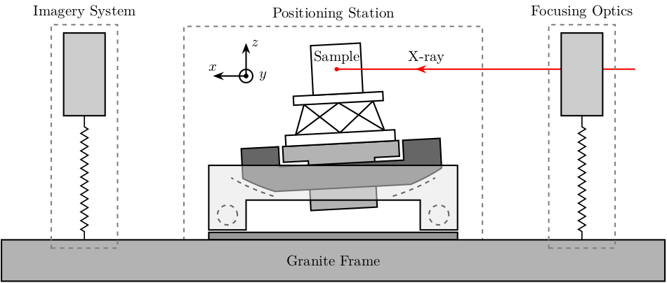
1.2 NASS - Solidworks
\graphicspath{{~/Cloud/thesis/latex/img/}} \begin{tikzpicture} \tikzstyle{legend}=[draw, text width=4.2cm, align=center] \node[inner sep=0pt, anchor=south west] (assemblage) at (0,0) {\includegraphics[width=0.65\textwidth]{assemblage_img.png}}; \coordinate[] (aheight) at (assemblage.north west); \coordinate[] (awidth) at (assemblage.south east); \coordinate[] (xrightlabel) at (-0.2, 0); \coordinate[] (xleftlabel) at ($(awidth)+(0.2, 0)$); % Translation Stage \coordinate[] (ty) at ($0.5*(aheight)+0.1*(awidth)$); \draw[<-] (ty) -- (ty-|xrightlabel) node[left, legend]{Translation Stage\\$\SI{-5}{m\metre} < T_y < \SI{5}{m\metre}$}; % Sample Interface \coordinate[] (sampleint) at ($0.77*(aheight)+0.5*(awidth)$); \coordinate[] (sampleintmid) at ($(sampleint)+(-1, -0.5)$); \draw[<-] (sampleint) -- (sampleintmid) -- (sampleintmid-|xrightlabel) node[left, legend]{Sample Interface}; % NASS % \coordinate[] (nass) at ($0.7*(aheight)+0.5*(awidth)$); % \draw[<-] (nass) -- (nass-|xrightlabel) node[left, legend]{NASS\\$\SI{-10}{\mu\metre} < T_{x y z} < \SI{10}{\mu\metre}$\\$\SI{-10}{\mu\radian} < \theta_{x y z} < \SI{10}{\mu\radian}$}; % Sample \coordinate[] (sample) at ($0.9*(aheight)+0.5*(awidth)$); \draw[<-] (sample) -- (sample-|xrightlabel) node[left, legend]{Sample Environment\\$\SI{1}{\kg} < M < \SI{50}{\kg}$}; % Tilt Stage \coordinate[] (tilt) at ($0.55*(aheight)+0.78*(awidth)$); \coordinate[] (tiltmid) at ($(tilt)+(1, 0.5)$); \draw[<-] (tilt) -- (tiltmid) -- (tiltmid-|xleftlabel) node[right, legend]{Tilt Stage\\$\ang{-3} < \theta_y < \ang{3}$}; % Spindle \coordinate[] (spindle) at ($0.53*(aheight)+0.33*(awidth)$); \coordinate[] (spindlemid) at ($(spindle)+(-1, -1.5)$); \draw[<-] (spindle) -- (spindlemid) -- (spindlemid-|xrightlabel) node[left, legend]{Spindle\\$\SI{1}{rpm} < \dot{\theta_z} < \SI{60}{rpm}$}; % Center of gravity compensation \coordinate[] (axisc) at ($0.65*(aheight)+0.65*(awidth)$); \coordinate[] (axiscmid) at ($(axisc)+(1, 1.5)$); \draw[<-] (axisc) -- (axiscmid) -- (axiscmid-|xleftlabel) node[right, legend]{Center of gravity\\compensation system}; % Micro Hexapod \coordinate[] (hexapod) at ($0.52*(aheight)+0.6*(awidth)$); \coordinate[] (hexapodmid) at ($(hexapod)+(1, -1.0)$); \draw[<-] (hexapod) -- (hexapodmid) -- (hexapodmid-|xleftlabel) node[right, legend]{Long Stroke Hexapod\\$\SI{-10}{m\metre} < T_{x y z} < \SI{10}{m\metre}$\\$\ang{-3} < \theta_{x y z} < \ang{3}$}; % Frame \coordinate[] (frame) at ($0.14*(aheight)+0.65*(awidth)$); \draw[<-] (frame) -- (frame-|xleftlabel) node[right, legend]{Frame fixed\\on the granite}; % X-Ray \draw[color=red, ->-=0.7] ($0.92*(aheight)+0.8*(awidth)$) -- node[above, color=black]{X-ray} ++(190:1.8); % Size of the setup \draw[dashed, <->, color=black!70] ($0.03*(aheight)+0.35*(awidth)$) -- node[below, color=black, pos=0.6]{$\approx\SI{1}{m}$} ($0.14*(aheight)+0.98*(awidth)$); \draw[dashed, <->, color=black!70] ($0.032*(aheight)+0.32*(awidth)$) -- node[left, color=black, pos=0.4]{$\approx\SI{1}{m}$} ($0.305*(aheight)+0.0*(awidth)$); % Axis \begin{scope}[shift={(0.0, 0.7)}] \draw[->] (0, 0) -- ++(195:0.8) node[above] {$x$}; \draw[->] (0, 0) -- ++(90:0.9) node[right] {$z$}; \draw[->] (0, 0) -- ++(-40:0.7) node[above] {$y$}; \end{scope} \end{tikzpicture}
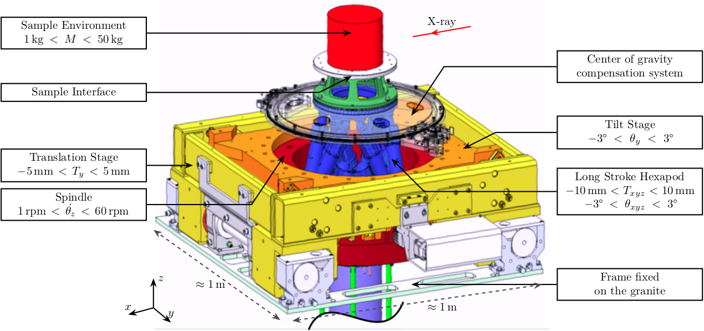
1.3 NASS - Picture
\graphicspath{{~/Cloud/thesis/latex/img/}} \begin{tikzpicture} \node[inner sep=0pt, anchor=south west] (photo) at (0,0) {\includegraphics[width=0.6\textwidth]{exp_setup_photo.png}}; \coordinate[] (aheight) at (photo.north west); \coordinate[] (awidth) at (photo.south east); \coordinate[] (granite) at ($0.1*(aheight)+0.1*(awidth)$); \coordinate[] (trans) at ($0.5*(aheight)+0.4*(awidth)$); \coordinate[] (tilt) at ($0.65*(aheight)+0.75*(awidth)$); \coordinate[] (hexapod) at ($0.7*(aheight)+0.5*(awidth)$); \coordinate[] (sample) at ($0.9*(aheight)+0.55*(awidth)$); % Granite \node[labelc] at (granite) {1}; % Translation stage \node[labelc] at (trans) {2}; % Tilt Stage \node[labelc] at (tilt) {3}; % Micro-Hexapod \node[labelc] at (hexapod) {4}; % Sample \node[labelc] at (sample) {5}; % Axis \begin{scope}[shift={($0.07*(aheight)+0.87*(awidth)$)}] \draw[->] (0, 0) -- ++(55:0.7) node[above] {$y$}; \draw[->] (0, 0) -- ++(90:0.9) node[left] {$z$}; \draw[->] (0, 0) -- ++(-20:0.7) node[above] {$x$}; \end{scope} \end{tikzpicture}
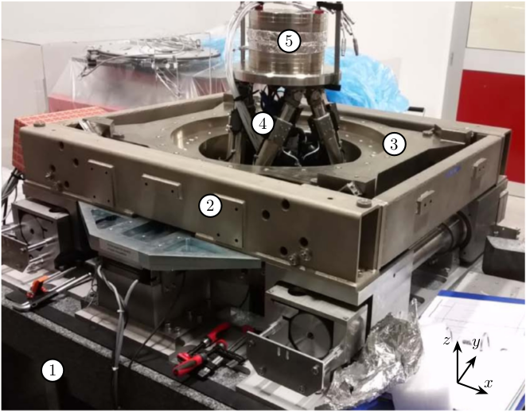
1.4 NASS - Schematic
\begin{tikzpicture} % Parameters \def\blockw{6.0cm} \def\blockh{1.2cm} \def\tiltdeg{3} \coordinate[] (rotationpoint) at (0, 4.5*\blockh); \begin{scope}[rotate around={\tiltdeg:(rotationpoint)}] % Tilt \path[] ([shift=(-120:4*\blockh)]rotationpoint) coordinate(beginarc) arc (-120:-110:4*\blockh) % -- ([shift=(-70:4*\blockh)]rotationpoint) arc (-70:-60:4*\blockh)% |- ++(-0.15*\blockw, 0.6*\blockh) coordinate (spindlene)% |- ($(beginarc) + (0.15*\blockw, 0.2*\blockh)$) coordinate (spindlesw) -- ++(0, 0.4*\blockh) coordinate(tiltte) -| cycle; % Spindle \coordinate[] (spindlese) at (spindlesw-|spindlene); \draw[fill=black!30] ($(spindlese)+(-0.1,0.1)+(-0.1*\blockw, 0)$) -| ($(spindlene)+(-0.1, 0)$) -| coordinate[pos=0.25](spindletop) ($(spindlesw)+(0.1,0.1)$) -| ++(0.1*\blockw, -\blockh) -| coordinate[pos=0.25](spindlebot) cycle; % \draw[dashed, color=black!60] ($(spindletop)+(0, 0.2)$) -- ($(spindlebot)+(0,-0.2)$); % Tilt \draw[fill=black!60] ([shift=(-120:4*\blockh)]rotationpoint) coordinate(beginarc) arc (-120:-110:4*\blockh) % -- ([shift=(-70:4*\blockh)]rotationpoint) arc (-70:-60:4*\blockh)% |- coordinate (tiltne) ++(-0.15*\blockw, 0.6*\blockh) coordinate (spindlene)% |- ($(beginarc) + (0.15*\blockw, 0.2*\blockh)$) coordinate (spindlesw) -- ++(0, 0.4*\blockh) -| cycle; % Micro-Hexapod \begin{scope}[shift={(spindletop)}] % Parameters definitions \def\baseh{0.22*\blockh} % Height of the base \def\naceh{0.18*\blockh} % Height of the nacelle \def\baser{0.22*\blockw} % Radius of the base \def\nacer{0.18*\blockw} % Radius of the nacelle \def\armr{0.2*\blockh} % Radius of the arms \def\basearmborder{0.2} \def\nacearmborder{0.2} \def\xnace{0} \def\ynace{\blockh-\naceh} \def\anace{0} \def\xbase{0} \def\ybase{0} \def\abase{0} % Hexapod1 \begin{scope}[shift={(\xbase, \ybase)}, rotate=\abase] % Base \draw[fill=white] (-\baser, 0) coordinate[](uhexabot) rectangle (\baser, \baseh); \coordinate[] (armbasel) at (-\baser+\basearmborder+\armr, \baseh); \coordinate[] (armbasec) at (0, \baseh); \coordinate[] (armbaser) at (\baser-\basearmborder-\armr, \baseh); \begin{scope}[shift={(\xnace, \ynace)}, rotate=\anace] \draw[fill=white] (-\nacer, 0) rectangle (\nacer, \naceh); \coordinate[] (uhexatop) at (0, \naceh); \coordinate[] (armnacel) at (-\nacer+\nacearmborder+\armr, 0); \coordinate[] (armnacec) at (0, 0); \coordinate[] (armnacer) at (\nacer-\nacearmborder-\armr, 0); \end{scope} \draw[] (armbasec) -- (armnacer); \draw[] (armbasec) -- (armnacel); \draw[] (armbasel) -- coordinate(mhexaw) (armnacel); \draw[] (armbasel) -- (armnacec); \draw[] (armbaser) -- (armnacec); \draw[] (armbaser) -- coordinate(mhexae) (armnacer); \end{scope} \end{scope} % NASS \begin{scope}[shift={(uhexatop)}] % Parameters definitions \def\baseh{0.1*\blockh} % Height of the base \def\naceh{0.1*\blockh} % Height of the nacelle \def\baser{0.18*\blockw} % Radius of the base \def\nacer{0.15*\blockw} % Radius of the nacelle \def\armr{0.1*\blockh} % Radius of the arms \def\basearmborder{0.2} \def\nacearmborder{0.2} \def\xnace{0} \def\ynace{0.6*\blockh-\naceh} \def\anace{0} \def\xbase{0} \def\ybase{0} \def\abase{0} % Hexapod1 \begin{scope}[shift={(\xbase, \ybase)}, rotate=\abase] % Base \draw[fill=white] (-\baser, 0) coordinate[](nhexabot) rectangle (\baser, \baseh); \coordinate[] (armbasel) at (-\baser+\basearmborder+\armr, \baseh); \coordinate[] (armbasec) at (0, \baseh); \coordinate[] (armbaser) at (\baser-\basearmborder-\armr, \baseh); \begin{scope}[shift={(\xnace, \ynace)}, rotate=\anace] \draw[fill=white] (-\nacer, 0) rectangle (\nacer, \naceh); \coordinate[] (nhexatop) at (0, \naceh); \coordinate[] (armnacel) at (-\nacer+\nacearmborder+\armr, 0); \coordinate[] (armnacec) at (0, 0); \coordinate[] (armnacer) at (\nacer-\nacearmborder-\armr, 0); \coordinate[] (measpostop) at (\nacer, \naceh); \end{scope} \draw[] (armbasec) -- (armnacer); \draw[] (armbasec) -- (armnacel); \draw[] (armbasel) -- coordinate(nhexaw) (armnacel); \draw[] (armbasel) -- (armnacec); \draw[] (armbaser) -- (armnacec); \draw[] (armbaser) -- coordinate(nhexae) (armnacer); % Force actuator \coordinate[] (nassfbot) at (0.8*\baser, \baseh); \coordinate[] (nassftop) at (armnacec-|nassfbot); \end{scope} \end{scope} % Sample \begin{scope}[shift={(nhexatop)}] \draw[fill=white] (-0.1*\blockw, 0) coordinate[](samplebot) rectangle coordinate[pos=0.5](samplecenter) (0.1*\blockw, \blockh) coordinate[](samplene); \coordinate[](samplenw) at (-0.1*\blockw, \blockh); \end{scope} \end{scope} \begin{scope}[shift={(0, -0.3*\blockh)}] % Translation Stage - fixed part \draw[fill=black!40] (-0.5*\blockw, 0) coordinate[](tyb) rectangle (0.5*\blockw, 0.15*\blockh); \coordinate[] (measposbot) at (0.5*\blockw, 0); % Translation Stage - mobile part \draw[fill=black!10, fill opacity=0.5] (-0.5*\blockw, 0.2*\blockh) -- (-0.5*\blockw, 1.5*\blockh) coordinate[](tyt) -- (0.5*\blockw, 1.5*\blockh) -- (0.5*\blockw, 0.2*\blockh) -- (0.35*\blockw, 0.2*\blockh) -- (0.35*\blockw, 0.8*\blockh) -- (-0.35*\blockw, 0.8*\blockh) -- (-0.35*\blockw, 0.2*\blockh) -- cycle; % Translation Guidance \draw[dashed, color=black!60] ($(-0.5*\blockw, 0)+( 0.075*\blockw,0.5*\blockh)$) circle (0.2*\blockh); \draw[dashed, color=black!60] ($( 0.5*\blockw, 0)+(-0.075*\blockw,0.5*\blockh)$) circle (0.2*\blockh); \draw[fill, color=black] ($( 0.5*\blockw, 0)+(-0.075*\blockw,0.5*\blockh)$) circle (0.04); \node[draw, circle, inner sep=0pt, minimum size=0.3cm, label=above:$T_y$] at ($( 0.5*\blockw, 0)+(-0.075*\blockw,0.5*\blockh)$){}; % Tilt Guidance \draw[dashed, color=black!60] ([shift=(-107:4.1*\blockh)]rotationpoint) arc (-107:-120:4.1*\blockh); \draw[dashed, color=black!60] ([shift=( -73:4.1*\blockh)]rotationpoint) arc (-73:-60:4.1*\blockh); \end{scope} % Vertical line \draw[dashed, color=black] (samplecenter) -- ++(0, -4*\blockh); \begin{scope}[rotate around={\tiltdeg:(samplecenter)}] \draw[dashed, color=black] (samplecenter) -- ++(0, -4*\blockh); \node[] at ($(samplecenter)+(0, -2.3*\blockh)$) {\AxisRotator[rotate=-90]}; \node[right, shift={(0.3,0)}] at ($(samplecenter)+(0, -2.3*\blockh)$) {$\theta_z$}; \end{scope} \draw[->] ([shift=(-90:3.6*\blockh)]samplecenter) arc (-90:-87:3.6*\blockh) node[right]{$\theta_y$}; % Laser \begin{scope}[shift={(samplecenter)}] \draw[color=red, -<-=0.5] (samplecenter) node[circle, fill=red, inner sep=0pt, minimum size=3pt]{} -- node[midway, above, color=black]{X-ray} ($(samplecenter)+(0.5*\blockw,0)$); % \draw[color=red, -<-=0.5] (samplecenter) node[circle, fill=red, inner sep=0pt, minimum size=3pt]{} -- ($(samplecenter)+(0.5*\blockw,0)$); \end{scope} % Axis \begin{scope}[shift={(-0.35*\blockw, 3*\blockh)}] \def\axissize{0.8cm} \draw[->] (0, 0) -- ++(0, \axissize) node[right]{$z$}; \draw[->] (0, 0) -- ++(-\axissize, 0) node[above]{$x$}; \draw[fill, color=black] (0, 0) circle (0.05*\axissize); \node[draw, circle, inner sep=0pt, minimum size=0.4*\axissize, label=right:$y$] (yaxis) at (0, 0){}; % \node[draw, circle, inner sep=0pt, cross, minimum size=0.4*\axissize, label=left:$y$] (yaxis) at (0, 0){}; \end{scope} % NUMBERS % Granite \node[labelc, anchor=west] (char) at (tyb) {1}; % Translation stage \node[labelc, anchor=north west] (char) at (tyt) {2}; % Tilt Stage \node[labelc, anchor=north east] (char) at (tiltne) {3}; % Spindle \node[labelc, anchor=north east] (char) at (spindlene) {4}; % Micro-Hexapod \node[labelc, anchor=east] (char) at (mhexaw) {5}; % Nano-Hexapod \node[labelc, anchor=east] (char) at (nhexaw) {6}; % Sample \node[labelc, anchor=north west] (char) at (samplenw) {7}; % % Measurement % \draw[dashed, color=black!50] (measposbot) -- ++(1,0) coordinate (measposbotend); % \draw[dashed, color=black!50] (measpostop) -- (measpostop-|measposbotend) coordinate (measpostopend); % \draw[<->, dashed] ($(measposbotend)+(-0.3, 0)$) -- node[midway, right](d){$d$} ($(measpostopend)+(-0.3, 0)$); % % Control % \draw[<->] (nassfbot) -- node[midway, right](F){$F$} (nassftop); % \def\blockw{1.2cm} % \def\blockh{1.0cm} % \node[draw, fill=white, block, right=0.6 of F] (K){$K$}; % \draw[->] (d.east) -- ++(0.2, 0) |- (K.east); % \draw[->] (K.west) -- (F.east); % \coordinate[] (labelx) at (-0.52*\blockw, 0); % \coordinate[] (labelb) at (-0.28*\blockw, 0); % % Curly braces % \draw [decorate,decoration={brace,amplitude=5pt}] (tyb-|labelx) -- coordinate[midway](labelty) (tyt-|labelx); % \draw [decorate,decoration={brace,amplitude=5pt}] ($(uhexabot-|labelb)+(0,0.05)$) -- coordinate[midway](labeluhexa) ($(uhexatop-|labelb)+(0,-0.05)$); % \draw [decorate,decoration={brace,amplitude=5pt}] ($(nhexabot-|labelb)+(0,0.05)$) -- coordinate[midway](labelnhexa) ($(nhexatop-|labelb)+(0,-0.05)$); % \draw [decorate,decoration={brace,amplitude=5pt}] ($(samplebot-|labelb)+(0,0.05)$) -- coordinate[midway](labelsample) ($(samplenw-|labelb)+(0,-0.05)$); % Labels % \node[left,xshift=-0.2cm] at (labeluhexa) {Hexapod}; % \node[left,xshift=-0.2cm] at (labelnhexa) {NASS}; % \node[left,xshift=-0.2cm] at (labelsample) {Sample}; % \node[left,xshift=-0.2cm, align=right] at (labelty) {Translation\\Stage}; % \draw[<-] ($0.5*(tiltte)+0.5*(beginarc)$) coordinate(arrowtilt) -- (arrowtilt-|labelty) node[left,xshift=-0.3cm] {Tilt Stage}; % \draw[<-] ($(spindlesw)+(0.5, 0.4)$) -- ++(-0.8, 0.5) coordinate(arrowspindle) -- (arrowspindle-|labelty) node[left,xshift=-0.3cm] {Spindle}; \end{tikzpicture}

1.5 NASS - Schematic without nano-station
\begin{tikzpicture} % Parameters \def\blockw{6.0cm} \def\blockh{1.2cm} \def\tiltdeg{3} \coordinate[] (rotationpoint) at (0, 4.5*\blockh); \begin{scope}[rotate around={\tiltdeg:(rotationpoint)}] % Tilt \path[] ([shift=(-120:4*\blockh)]rotationpoint) coordinate(beginarc) arc (-120:-110:4*\blockh) % -- ([shift=(-70:4*\blockh)]rotationpoint) arc (-70:-60:4*\blockh)% |- ++(-0.15*\blockw, 0.6*\blockh) coordinate (spindlene)% |- ($(beginarc) + (0.15*\blockw, 0.2*\blockh)$) coordinate (spindlesw) -- ++(0, 0.4*\blockh) coordinate(tiltte) -| cycle; % Spindle \coordinate[] (spindlese) at (spindlesw-|spindlene); \draw[fill=black!30] ($(spindlese)+(-0.1,0.1)+(-0.1*\blockw, 0)$) -| ($(spindlene)+(-0.1, 0)$) -| coordinate[pos=0.25](spindletop) ($(spindlesw)+(0.1,0.1)$) -| ++(0.1*\blockw, -\blockh) -| coordinate[pos=0.25](spindlebot) cycle; % \draw[dashed, color=black!60] ($(spindletop)+(0, 0.2)$) -- ($(spindlebot)+(0,-0.2)$); % Tilt \draw[fill=black!60] ([shift=(-120:4*\blockh)]rotationpoint) coordinate(beginarc) arc (-120:-110:4*\blockh) % -- ([shift=(-70:4*\blockh)]rotationpoint) arc (-70:-60:4*\blockh)% |- coordinate (tiltne) ++(-0.15*\blockw, 0.6*\blockh) coordinate (spindlene)% |- ($(beginarc) + (0.15*\blockw, 0.2*\blockh)$) coordinate (spindlesw) -- ++(0, 0.4*\blockh) -| cycle; % Micro-Hexapod \begin{scope}[shift={(spindletop)}] % Parameters definitions \def\baseh{0.22*\blockh} % Height of the base \def\naceh{0.18*\blockh} % Height of the nacelle \def\baser{0.22*\blockw} % Radius of the base \def\nacer{0.18*\blockw} % Radius of the nacelle \def\armr{0.2*\blockh} % Radius of the arms \def\basearmborder{0.2} \def\nacearmborder{0.2} \def\xnace{0} \def\ynace{\blockh-\naceh} \def\anace{0} \def\xbase{0} \def\ybase{0} \def\abase{0} % Hexapod1 \begin{scope}[shift={(\xbase, \ybase)}, rotate=\abase] % Base \draw[fill=white] (-\baser, 0) coordinate[](uhexabot) rectangle (\baser, \baseh); \coordinate[] (armbasel) at (-\baser+\basearmborder+\armr, \baseh); \coordinate[] (armbasec) at (0, \baseh); \coordinate[] (armbaser) at (\baser-\basearmborder-\armr, \baseh); \begin{scope}[shift={(\xnace, \ynace)}, rotate=\anace] \draw[fill=white] (-\nacer, 0) rectangle (\nacer, \naceh); \coordinate[] (uhexatop) at (0, \naceh); \coordinate[] (armnacel) at (-\nacer+\nacearmborder+\armr, 0); \coordinate[] (armnacec) at (0, 0); \coordinate[] (armnacer) at (\nacer-\nacearmborder-\armr, 0); \end{scope} \draw[] (armbasec) -- (armnacer); \draw[] (armbasec) -- (armnacel); \draw[] (armbasel) -- coordinate(mhexaw) (armnacel); \draw[] (armbasel) -- (armnacec); \draw[] (armbaser) -- (armnacec); \draw[] (armbaser) -- coordinate(mhexae) (armnacer); \end{scope} \end{scope} % Sample \begin{scope}[shift={(uhexatop)}] \draw[fill=white] (-0.1*\blockw, 0) coordinate[](samplebot) rectangle coordinate[pos=0.5](samplecenter) (0.1*\blockw, \blockh) coordinate[](samplene); \coordinate[](samplenw) at (-0.1*\blockw, \blockh); \end{scope} \end{scope} \begin{scope}[shift={(0, -0.3*\blockh)}] % Translation Stage - fixed part \draw[fill=black!40] (-0.5*\blockw, 0) coordinate[](tyb) rectangle (0.5*\blockw, 0.15*\blockh); \coordinate[] (measposbot) at (0.5*\blockw, 0); % Translation Stage - mobile part \draw[fill=black!10, fill opacity=0.5] (-0.5*\blockw, 0.2*\blockh) -- (-0.5*\blockw, 1.5*\blockh) coordinate[](tyt) -- (0.5*\blockw, 1.5*\blockh) -- (0.5*\blockw, 0.2*\blockh) -- (0.35*\blockw, 0.2*\blockh) -- (0.35*\blockw, 0.8*\blockh) -- (-0.35*\blockw, 0.8*\blockh) -- (-0.35*\blockw, 0.2*\blockh) -- cycle; % Translation Guidance \draw[dashed, color=black!60] ($(-0.5*\blockw, 0)+( 0.075*\blockw,0.5*\blockh)$) circle (0.2*\blockh); \draw[dashed, color=black!60] ($( 0.5*\blockw, 0)+(-0.075*\blockw,0.5*\blockh)$) circle (0.2*\blockh); \draw[fill, color=black] ($( 0.5*\blockw, 0)+(-0.075*\blockw,1.0*\blockh)$) circle (0.04); \node[draw, circle, inner sep=0pt, minimum size=0.3cm, label=left:$T_y$] at ($( 0.5*\blockw, 0)+(-0.075*\blockw,1.0*\blockh)$){}; % Tilt Guidance \draw[dashed, color=black!60] ([shift=(-107:4.1*\blockh)]rotationpoint) arc (-107:-120:4.1*\blockh); \draw[dashed, color=black!60] ([shift=( -73:4.1*\blockh)]rotationpoint) arc (-73:-60:4.1*\blockh); \end{scope} % Vertical line \draw[dashed, color=black] (samplecenter) -- ++(0, -4*\blockh); \begin{scope}[rotate around={\tiltdeg:(samplecenter)}] \draw[dashed, color=black] (samplecenter) -- ++(0, -4*\blockh); \node[] at ($(samplecenter)+(0, -2.3*\blockh)$) {\AxisRotator[rotate=-90]}; \node[right, shift={(0.3,0)}] at ($(samplecenter)+(0, -2.3*\blockh)$) {$\theta_z$}; \end{scope} \draw[->] ([shift=(-90:3.6*\blockh)]samplecenter) arc (-90:-87:3.6*\blockh) node[right]{$\theta_y$}; % Laser \begin{scope}[shift={(samplecenter)}] \draw[color=red, -<-=0.5] (samplecenter) node[circle, fill=red, inner sep=0pt, minimum size=3pt]{} -- node[midway, above, color=black]{X-ray} ($(samplecenter)+(0.5*\blockw,0)$); % \draw[color=red, -<-=0.5] (samplecenter) node[circle, fill=red, inner sep=0pt, minimum size=3pt]{} -- ($(samplecenter)+(0.5*\blockw,0)$); \end{scope} % Axis \begin{scope}[shift={(-0.35*\blockw, 3*\blockh)}] \def\axissize{0.8cm} \draw[->] (0, 0) -- ++(0, \axissize) node[right]{$z$}; \draw[->] (0, 0) -- ++(-\axissize, 0) node[above]{$x$}; \draw[fill, color=black] (0, 0) circle (0.05*\axissize); \node[draw, circle, inner sep=0pt, minimum size=0.4*\axissize, label=right:$y$] (yaxis) at (0, 0){}; % \node[draw, circle, inner sep=0pt, cross, minimum size=0.4*\axissize, label=left:$y$] (yaxis) at (0, 0){}; \end{scope} % NUMBERS % Granite \node[labelc, anchor=west] (char) at (tyb) {1}; % Translation stage \node[labelc, anchor=north west] (char) at (tyt) {2}; % Tilt Stage \node[labelc, anchor=north east] (char) at (tiltne) {3}; % Spindle \node[labelc, anchor=north east] (char) at (spindlene) {4}; % Micro-Hexapod \node[labelc, anchor=east] (char) at (mhexaw) {5}; % Sample \node[labelc, anchor=north west] (char) at (samplenw) {6}; % % Measurement % \draw[dashed, color=black!50] (measposbot) -- ++(1,0) coordinate (measposbotend); % \draw[dashed, color=black!50] (measpostop) -- (measpostop-|measposbotend) coordinate (measpostopend); % \draw[<->, dashed] ($(measposbotend)+(-0.3, 0)$) -- node[midway, right](d){$d$} ($(measpostopend)+(-0.3, 0)$); % % Control % \draw[<->] (nassfbot) -- node[midway, right](F){$F$} (nassftop); % \def\blockw{1.2cm} % \def\blockh{1.0cm} % \node[draw, fill=white, block, right=0.6 of F] (K){$K$}; % \draw[->] (d.east) -- ++(0.2, 0) |- (K.east); % \draw[->] (K.west) -- (F.east); % \coordinate[] (labelx) at (-0.52*\blockw, 0); % \coordinate[] (labelb) at (-0.28*\blockw, 0); % % Curly braces % \draw [decorate,decoration={brace,amplitude=5pt}] (tyb-|labelx) -- coordinate[midway](labelty) (tyt-|labelx); % \draw [decorate,decoration={brace,amplitude=5pt}] ($(uhexabot-|labelb)+(0,0.05)$) -- coordinate[midway](labeluhexa) ($(uhexatop-|labelb)+(0,-0.05)$); % \draw [decorate,decoration={brace,amplitude=5pt}] ($(nhexabot-|labelb)+(0,0.05)$) -- coordinate[midway](labelnhexa) ($(nhexatop-|labelb)+(0,-0.05)$); % \draw [decorate,decoration={brace,amplitude=5pt}] ($(samplebot-|labelb)+(0,0.05)$) -- coordinate[midway](labelsample) ($(samplenw-|labelb)+(0,-0.05)$); % Labels % \node[left,xshift=-0.2cm] at (labeluhexa) {Hexapod}; % \node[left,xshift=-0.2cm] at (labelnhexa) {NASS}; % \node[left,xshift=-0.2cm] at (labelsample) {Sample}; % \node[left,xshift=-0.2cm, align=right] at (labelty) {Translation\\Stage}; % \draw[<-] ($0.5*(tiltte)+0.5*(beginarc)$) coordinate(arrowtilt) -- (arrowtilt-|labelty) node[left,xshift=-0.3cm] {Tilt Stage}; % \draw[<-] ($(spindlesw)+(0.5, 0.4)$) -- ++(-0.8, 0.5) coordinate(arrowspindle) -- (arrowspindle-|labelty) node[left,xshift=-0.3cm] {Spindle}; \end{tikzpicture}

2 Control
2.1 Classical Control
\begin{tikzpicture} % Parameters \def\blockw{6.0cm} \def\blockh{1.2cm} % Translation Stage \begin{scope} % Translation Stage - fixed part \draw[fill=black!40] (-0.5*\blockw, 0) coordinate[](tyb) rectangle (0.5*\blockw, 0.15*\blockh); \coordinate[] (measposbot) at (0.5*\blockw, 0); % Tilt \path[] ([shift=(-120:4*\blockh)]0, 4.9*\blockh) coordinate(beginarc) arc (-120:-110:4*\blockh) % -- ([shift=(-70:4*\blockh)]0, 4.9*\blockh) arc (-70:-60:4*\blockh)% |- ++(-0.15*\blockw, 0.6*\blockh) coordinate (spindlene)% |- ($(beginarc) + (0.15*\blockw, 0.2*\blockh)$) coordinate (spindlesw) -- ++(0, 0.4*\blockh) coordinate(tiltte) -| cycle; % Spindle \coordinate[] (spindlese) at (spindlesw-|spindlene); \draw[fill=black!30] ($(spindlese)+(-0.1,0.1)+(-0.1*\blockw, 0)$) -| ($(spindlene)+(-0.1, 0)$) -| coordinate[pos=0.25](spindletop) ($(spindlesw)+(0.1,0.1)$) -| ++(0.1*\blockw, -\blockh) -| coordinate[pos=0.25](spindlebot) cycle; \draw[dashed, color=black!60] ($(spindletop)+(0, 0.2)$) -- ($(spindlebot)+(0,-0.2)$); % Tilt \draw[fill=black!60] ([shift=(-120:4*\blockh)]0, 4.9*\blockh) coordinate(beginarc) arc (-120:-110:4*\blockh) % -- ([shift=(-70:4*\blockh)]0, 4.9*\blockh) arc (-70:-60:4*\blockh)% |- ++(-0.15*\blockw, 0.6*\blockh) coordinate (spindlene)% |- ($(beginarc) + (0.15*\blockw, 0.2*\blockh)$) coordinate (spindlesw) -- ++(0, 0.4*\blockh) -| cycle; % Translation Stage - mobile part \draw[fill=black!10, fill opacity=0.5] (-0.5*\blockw, 0.2*\blockh) -- (-0.5*\blockw, 1.5*\blockh) coordinate[](tyt) -- (0.5*\blockw, 1.5*\blockh) -- (0.5*\blockw, 0.2*\blockh) -- (0.35*\blockw, 0.2*\blockh) -- (0.35*\blockw, 0.8*\blockh) -- (-0.35*\blockw, 0.8*\blockh) -- (-0.35*\blockw, 0.2*\blockh) -- cycle; % Translation Guidance \draw[dashed, color=black!60] ($(-0.5*\blockw, 0)+( 0.075*\blockw,0.5*\blockh)$) circle (0.2*\blockh); \draw[dashed, color=black!60] ($( 0.5*\blockw, 0)+(-0.075*\blockw,0.5*\blockh)$) circle (0.2*\blockh); % Tilt Guidance \draw[dashed, color=black!60] ([shift=(-110:4*\blockh)]0, 4.8*\blockh) arc (-110:-120:4*\blockh); \draw[dashed, color=black!60] ([shift=( -70:4*\blockh)]0, 4.8*\blockh) arc (-70:-60:4*\blockh); \end{scope} % Micro-Hexapod \begin{scope}[shift={(spindletop)}] % Parameters definitions \def\baseh{0.2*\blockh} % Height of the base \def\naceh{0.2*\blockh} % Height of the nacelle \def\baser{0.22*\blockw} % Radius of the base \def\nacer{0.18*\blockw} % Radius of the nacelle \def\armr{0.2*\blockh} % Radius of the arms \def\basearmborder{0.2} \def\nacearmborder{0.2} \def\xnace{0} \def\ynace{\blockh-\naceh} \def\anace{0} \def\xbase{0} \def\ybase{0} \def\abase{0} % Hexapod1 \begin{scope}[shift={(\xbase, \ybase)}, rotate=\abase] % Base \draw[fill=white] (-\baser, 0) coordinate[](uhexabot) rectangle (\baser, \baseh); \coordinate[] (armbasel) at (-\baser+\basearmborder+\armr, \baseh); \coordinate[] (armbasec) at (0, \baseh); \coordinate[] (armbaser) at (\baser-\basearmborder-\armr, \baseh); % Nacelle1 \begin{scope}[shift={(\xnace, \ynace)}, rotate=\anace] \draw[fill=white] (-\nacer, 0) rectangle (\nacer, \naceh); \coordinate[] (uhexatop) at (0, \naceh); \coordinate[] (armnacel) at (-\nacer+\nacearmborder+\armr, 0); \coordinate[] (armnacec) at (0, 0); \coordinate[] (armnacer) at (\nacer-\nacearmborder-\armr, 0); \end{scope} % Nacelle1 END \draw[] (armbasec) -- (armnacer); \draw[] (armbasec) -- (armnacel); \draw[] (armbasel) -- (armnacel); \draw[] (armbasel) -- (armnacec); \draw[] (armbaser) -- (armnacec); \draw[] (armbaser) -- (armnacer); \end{scope} \end{scope} % NASS \begin{scope}[shift={(uhexatop)}] % Parameters definitions \def\baseh{0.1*\blockh} % Height of the base \def\naceh{0.1*\blockh} % Height of the nacelle \def\baser{0.16*\blockw} % Radius of the base \def\nacer{0.14*\blockw} % Radius of the nacelle \def\armr{0.1*\blockh} % Radius of the arms \def\basearmborder{0.2} \def\nacearmborder{0.2} \def\xnace{0} \def\ynace{0.6*\blockh-\naceh} \def\anace{0} \def\xbase{0} \def\ybase{0} \def\abase{0} % Hexapod1 \begin{scope}[shift={(\xbase, \ybase)}, rotate=\abase] % Base \draw[fill=red!50!black] (-\baser, 0) coordinate[](nhexabot) rectangle (\baser, \baseh); \coordinate[] (armbasel) at (-\baser+\basearmborder+\armr, \baseh); \coordinate[] (armbasec) at (0, \baseh); \coordinate[] (armbaser) at (\baser-\basearmborder-\armr, \baseh); % Nacelle1 \begin{scope}[shift={(\xnace, \ynace)}, rotate=\anace] \draw[fill=red!50!black] (-\nacer, 0) rectangle (\nacer, \naceh); \coordinate[] (nhexatop) at (0, \naceh); \coordinate[] (armnacel) at (-\nacer+\nacearmborder+\armr, 0); \coordinate[] (armnacec) at (0, 0); \coordinate[] (armnacer) at (\nacer-\nacearmborder-\armr, 0); \coordinate[] (measpostop) at (\nacer, \naceh); \draw[fill=white!50!black] (\nacer, \naceh) rectangle ++(-\naceh, \naceh); \draw[dashed, ->] (\nacer, 2*\naceh) -- ++(0, 4*\naceh) node[below right](inertialsensor){$x$}; \end{scope} % Nacelle1 END \draw[color=red!50!black] (armbasec) -- (armnacer); \draw[color=red!50!black] (armbasec) -- (armnacel); \draw[color=red!50!black] (armbasel) -- (armnacel); \draw[color=red!50!black] (armbasel) -- (armnacec); \draw[color=red!50!black] (armbaser) -- (armnacec); \draw[color=red!50!black] (armbaser) -- (armnacer); % Force actuator \coordinate[] (nassfbot) at (0.8*\baser, \baseh); \coordinate[] (nassftop) at (armnacec-|nassfbot); \end{scope} \end{scope} % Sample \begin{scope}[shift={(nhexatop)}] \draw[fill=white] (-0.1*\blockw, 0) coordinate[](samplebot) rectangle coordinate[pos=0.5](samplecenter) (0.1*\blockw, \blockh) coordinate[](sampletop); \end{scope} % Laser \begin{scope}[shift={(samplecenter)}] \draw[color=red, -<-=0.5] (samplecenter) node[circle, fill=red, inner sep=0pt, minimum size=3pt]{} -- node[midway, above, color=black]{X-ray} ($(samplecenter)+(0.5*\blockw,0)$); \end{scope} %% Measurement \draw[dashed, color=black!50] (measposbot) -- ++(0.8,0) coordinate (measposbotend); \draw[dashed, color=black!50] (measpostop) -- (measpostop-|measposbotend) coordinate (measpostopend); \draw[<->, dashed] ($(measposbotend)+(-0.2, 0)$) -- node[midway, left](d){$d$} ($(measpostopend)+(-0.2, 0)$); \draw [decorate, decoration={brace,amplitude=3pt,mirror}] ($(measposbotend)+(0.2, 0)$) -- coordinate[midway](labelmeas) ($(measpostopend)+(0.2, 0)$); \node[xshift=0.6cm, rotate=90, text width=5cm, align=center] at (labelmeas) {Interferometric\\Measurement}; %% Control \draw[<->] (nassfbot) -- node[midway, right](F){$F$} (nassftop); \node[draw, block={2em}{1em}, right=0.3 of F] (K){$K$}; \draw[->] (d.west) -| ($(K.east)+(0.5, 0)$) -- (K.east); \draw[->] (K.west) -- (F.east); \end{tikzpicture}

2.2 Colocated Control
\begin{tikzpicture} % Parameters \def\blockw{6.0cm} \def\blockh{1.2cm} % Translation Stage \begin{scope} % Translation Stage - fixed part \draw[fill=black!40] (-0.5*\blockw, 0) coordinate[](tyb) rectangle (0.5*\blockw, 0.15*\blockh); \coordinate[] (measposbot) at (0.5*\blockw, 0); % Tilt \path[] ([shift=(-120:4*\blockh)]0, 4.9*\blockh) coordinate(beginarc) arc (-120:-110:4*\blockh) % -- ([shift=(-70:4*\blockh)]0, 4.9*\blockh) arc (-70:-60:4*\blockh)% |- ++(-0.15*\blockw, 0.6*\blockh) coordinate (spindlene)% |- ($(beginarc) + (0.15*\blockw, 0.2*\blockh)$) coordinate (spindlesw) -- ++(0, 0.4*\blockh) coordinate(tiltte) -| cycle; % Spindle \coordinate[] (spindlese) at (spindlesw-|spindlene); \draw[fill=black!30] ($(spindlese)+(-0.1,0.1)+(-0.1*\blockw, 0)$) -| ($(spindlene)+(-0.1, 0)$) -| coordinate[pos=0.25](spindletop) ($(spindlesw)+(0.1,0.1)$) -| ++(0.1*\blockw, -\blockh) -| coordinate[pos=0.25](spindlebot) cycle; \draw[dashed, color=black!60] ($(spindletop)+(0, 0.2)$) -- ($(spindlebot)+(0,-0.2)$); % Tilt \draw[fill=black!60] ([shift=(-120:4*\blockh)]0, 4.9*\blockh) coordinate(beginarc) arc (-120:-110:4*\blockh) % -- ([shift=(-70:4*\blockh)]0, 4.9*\blockh) arc (-70:-60:4*\blockh)% |- ++(-0.15*\blockw, 0.6*\blockh) coordinate (spindlene)% |- ($(beginarc) + (0.15*\blockw, 0.2*\blockh)$) coordinate (spindlesw) -- ++(0, 0.4*\blockh) -| cycle; % Translation Stage - mobile part \draw[fill=black!10, fill opacity=0.5] (-0.5*\blockw, 0.2*\blockh) -- (-0.5*\blockw, 1.5*\blockh) coordinate[](tyt) -- (0.5*\blockw, 1.5*\blockh) -- (0.5*\blockw, 0.2*\blockh) -- (0.35*\blockw, 0.2*\blockh) -- (0.35*\blockw, 0.8*\blockh) -- (-0.35*\blockw, 0.8*\blockh) -- (-0.35*\blockw, 0.2*\blockh) -- cycle; % Translation Guidance \draw[dashed, color=black!60] ($(-0.5*\blockw, 0)+( 0.075*\blockw,0.5*\blockh)$) circle (0.2*\blockh); \draw[dashed, color=black!60] ($( 0.5*\blockw, 0)+(-0.075*\blockw,0.5*\blockh)$) circle (0.2*\blockh); % Tilt Guidance \draw[dashed, color=black!60] ([shift=(-110:4*\blockh)]0, 4.8*\blockh) arc (-110:-120:4*\blockh); \draw[dashed, color=black!60] ([shift=( -70:4*\blockh)]0, 4.8*\blockh) arc (-70:-60:4*\blockh); \end{scope} % Micro-Hexapod \begin{scope}[shift={(spindletop)}] % Parameters definitions \def\baseh{0.2*\blockh} % Height of the base \def\naceh{0.2*\blockh} % Height of the nacelle \def\baser{0.22*\blockw} % Radius of the base \def\nacer{0.18*\blockw} % Radius of the nacelle \def\armr{0.2*\blockh} % Radius of the arms \def\basearmborder{0.2} \def\nacearmborder{0.2} \def\xnace{0} \def\ynace{\blockh-\naceh} \def\anace{0} \def\xbase{0} \def\ybase{0} \def\abase{0} % Hexapod1 \begin{scope}[shift={(\xbase, \ybase)}, rotate=\abase] % Base \draw[fill=white] (-\baser, 0) coordinate[](uhexabot) rectangle (\baser, \baseh); \coordinate[] (armbasel) at (-\baser+\basearmborder+\armr, \baseh); \coordinate[] (armbasec) at (0, \baseh); \coordinate[] (armbaser) at (\baser-\basearmborder-\armr, \baseh); % Nacelle1 \begin{scope}[shift={(\xnace, \ynace)}, rotate=\anace] \draw[fill=white] (-\nacer, 0) rectangle (\nacer, \naceh); \coordinate[] (uhexatop) at (0, \naceh); \coordinate[] (armnacel) at (-\nacer+\nacearmborder+\armr, 0); \coordinate[] (armnacec) at (0, 0); \coordinate[] (armnacer) at (\nacer-\nacearmborder-\armr, 0); \end{scope} % Nacelle1 END \draw[] (armbasec) -- (armnacer); \draw[] (armbasec) -- (armnacel); \draw[] (armbasel) -- (armnacel); \draw[] (armbasel) -- (armnacec); \draw[] (armbaser) -- (armnacec); \draw[] (armbaser) -- (armnacer); \end{scope} \end{scope} % NASS \begin{scope}[shift={(uhexatop)}] % Parameters definitions \def\baseh{0.1*\blockh} % Height of the base \def\naceh{0.1*\blockh} % Height of the nacelle \def\baser{0.16*\blockw} % Radius of the base \def\nacer{0.14*\blockw} % Radius of the nacelle \def\armr{0.1*\blockh} % Radius of the arms \def\basearmborder{0.2} \def\nacearmborder{0.2} \def\xnace{0} \def\ynace{0.6*\blockh-\naceh} \def\anace{0} \def\xbase{0} \def\ybase{0} \def\abase{0} % Hexapod1 \begin{scope}[shift={(\xbase, \ybase)}, rotate=\abase] % Base \draw[fill=red!50!black] (-\baser, 0) coordinate[](nhexabot) rectangle (\baser, \baseh); \coordinate[] (armbasel) at (-\baser+\basearmborder+\armr, \baseh); \coordinate[] (armbasec) at (0, \baseh); \coordinate[] (armbaser) at (\baser-\basearmborder-\armr, \baseh); % Nacelle1 \begin{scope}[shift={(\xnace, \ynace)}, rotate=\anace] \draw[fill=red!50!black] (-\nacer, 0) rectangle (\nacer, \naceh); \coordinate[] (nhexatop) at (0, \naceh); \coordinate[] (armnacel) at (-\nacer+\nacearmborder+\armr, 0); \coordinate[] (armnacec) at (0, 0); \coordinate[] (armnacer) at (\nacer-\nacearmborder-\armr, 0); \coordinate[] (measpostop) at (\nacer, \naceh); \draw[fill=white!50!black] (\nacer, \naceh) rectangle ++(-\naceh, \naceh); \draw[dashed, ->] (\nacer, 2*\naceh) -- ++(0, 4*\naceh) node[below right](inertialsensor){$x$}; \end{scope} % Nacelle1 END \draw[color=red!50!black] (armbasec) -- (armnacer); \draw[color=red!50!black] (armbasec) -- (armnacel); \draw[color=red!50!black] (armbasel) -- (armnacel); \draw[color=red!50!black] (armbasel) -- (armnacec); \draw[color=red!50!black] (armbaser) -- (armnacec); \draw[color=red!50!black] (armbaser) -- (armnacer); % Force actuator \coordinate[] (nassfbot) at (0.8*\baser, \baseh); \coordinate[] (nassftop) at (armnacec-|nassfbot); \end{scope} \end{scope} % Sample \begin{scope}[shift={(nhexatop)}] \draw[fill=white] (-0.1*\blockw, 0) coordinate[](samplebot) rectangle coordinate[pos=0.5](samplecenter) (0.1*\blockw, \blockh) coordinate[](sampletop); \end{scope} % Laser \begin{scope}[shift={(samplecenter)}] \draw[color=red, -<-=0.5] (samplecenter) node[circle, fill=red, inner sep=0pt, minimum size=3pt]{} -- node[midway, above, color=black]{X-ray} ($(samplecenter)+(0.5*\blockw,0)$); \end{scope} %% Measurement \draw[dashed, color=black!50] (measposbot) -- ++(0.8,0) coordinate (measposbotend); \draw[dashed, color=black!50] (measpostop) -- (measpostop-|measposbotend) coordinate (measpostopend); \draw[<->, dashed] ($(measposbotend)+(-0.2, 0)$) -- node[midway, left](d){$d$} ($(measpostopend)+(-0.2, 0)$); \draw [decorate, decoration={brace,amplitude=3pt,mirror}] ($(measposbotend)+(0.2, 0)$) -- coordinate[midway](labelmeas) ($(measpostopend)+(0.2, 0)$); \node[xshift=0.6cm, rotate=90, text width=5cm, align=center] at (labelmeas) {Interferometric\\Measurement}; %% Control \draw[<->] (nassfbot) -- node[midway, right](F){$F$} (nassftop); \node[draw, block={2em}{1em}, right=0.3 of F] (K){$K$}; \draw[->] (inertialsensor) -| ($(K.east)+(0.5, 0)$) -- (K.east); \draw[->] (K.west) -- (F.east); \end{tikzpicture}

2.3 Sensor Fusion
\begin{tikzpicture} % Parameters \def\blockw{6.0cm} \def\blockh{1.2cm} % Translation Stage \begin{scope} % Translation Stage - fixed part \draw[fill=black!40] (-0.5*\blockw, 0) coordinate[](tyb) rectangle (0.5*\blockw, 0.15*\blockh); \coordinate[] (measposbot) at (0.5*\blockw, 0); % Tilt \path[] ([shift=(-120:4*\blockh)]0, 4.9*\blockh) coordinate(beginarc) arc (-120:-110:4*\blockh) % -- ([shift=(-70:4*\blockh)]0, 4.9*\blockh) arc (-70:-60:4*\blockh)% |- ++(-0.15*\blockw, 0.6*\blockh) coordinate (spindlene)% |- ($(beginarc) + (0.15*\blockw, 0.2*\blockh)$) coordinate (spindlesw) -- ++(0, 0.4*\blockh) coordinate(tiltte) -| cycle; % Spindle \coordinate[] (spindlese) at (spindlesw-|spindlene); \draw[fill=black!30] ($(spindlese)+(-0.1,0.1)+(-0.1*\blockw, 0)$) -| ($(spindlene)+(-0.1, 0)$) -| coordinate[pos=0.25](spindletop) ($(spindlesw)+(0.1,0.1)$) -| ++(0.1*\blockw, -\blockh) -| coordinate[pos=0.25](spindlebot) cycle; \draw[dashed, color=black!60] ($(spindletop)+(0, 0.2)$) -- ($(spindlebot)+(0,-0.2)$); % Tilt \draw[fill=black!60] ([shift=(-120:4*\blockh)]0, 4.9*\blockh) coordinate(beginarc) arc (-120:-110:4*\blockh) % -- ([shift=(-70:4*\blockh)]0, 4.9*\blockh) arc (-70:-60:4*\blockh)% |- ++(-0.15*\blockw, 0.6*\blockh) coordinate (spindlene)% |- ($(beginarc) + (0.15*\blockw, 0.2*\blockh)$) coordinate (spindlesw) -- ++(0, 0.4*\blockh) -| cycle; % Translation Stage - mobile part \draw[fill=black!10, fill opacity=0.5] (-0.5*\blockw, 0.2*\blockh) -- (-0.5*\blockw, 1.5*\blockh) coordinate[](tyt) -- (0.5*\blockw, 1.5*\blockh) -- (0.5*\blockw, 0.2*\blockh) -- (0.35*\blockw, 0.2*\blockh) -- (0.35*\blockw, 0.8*\blockh) -- (-0.35*\blockw, 0.8*\blockh) -- (-0.35*\blockw, 0.2*\blockh) -- cycle; % Translation Guidance \draw[dashed, color=black!60] ($(-0.5*\blockw, 0)+( 0.075*\blockw,0.5*\blockh)$) circle (0.2*\blockh); \draw[dashed, color=black!60] ($( 0.5*\blockw, 0)+(-0.075*\blockw,0.5*\blockh)$) circle (0.2*\blockh); % Tilt Guidance \draw[dashed, color=black!60] ([shift=(-110:4*\blockh)]0, 4.8*\blockh) arc (-110:-120:4*\blockh); \draw[dashed, color=black!60] ([shift=( -70:4*\blockh)]0, 4.8*\blockh) arc (-70:-60:4*\blockh); \end{scope} % Micro-Hexapod \begin{scope}[shift={(spindletop)}] % Parameters definitions \def\baseh{0.2*\blockh} % Height of the base \def\naceh{0.2*\blockh} % Height of the nacelle \def\baser{0.22*\blockw} % Radius of the base \def\nacer{0.18*\blockw} % Radius of the nacelle \def\armr{0.2*\blockh} % Radius of the arms \def\basearmborder{0.2} \def\nacearmborder{0.2} \def\xnace{0} \def\ynace{\blockh-\naceh} \def\anace{0} \def\xbase{0} \def\ybase{0} \def\abase{0} % Hexapod1 \begin{scope}[shift={(\xbase, \ybase)}, rotate=\abase] % Base \draw[fill=white] (-\baser, 0) coordinate[](uhexabot) rectangle (\baser, \baseh); \coordinate[] (armbasel) at (-\baser+\basearmborder+\armr, \baseh); \coordinate[] (armbasec) at (0, \baseh); \coordinate[] (armbaser) at (\baser-\basearmborder-\armr, \baseh); % Nacelle1 \begin{scope}[shift={(\xnace, \ynace)}, rotate=\anace] \draw[fill=white] (-\nacer, 0) rectangle (\nacer, \naceh); \coordinate[] (uhexatop) at (0, \naceh); \coordinate[] (armnacel) at (-\nacer+\nacearmborder+\armr, 0); \coordinate[] (armnacec) at (0, 0); \coordinate[] (armnacer) at (\nacer-\nacearmborder-\armr, 0); \end{scope} % Nacelle1 END \draw[] (armbasec) -- (armnacer); \draw[] (armbasec) -- (armnacel); \draw[] (armbasel) -- (armnacel); \draw[] (armbasel) -- (armnacec); \draw[] (armbaser) -- (armnacec); \draw[] (armbaser) -- (armnacer); \end{scope} \end{scope} % NASS \begin{scope}[shift={(uhexatop)}] % Parameters definitions \def\baseh{0.1*\blockh} % Height of the base \def\naceh{0.1*\blockh} % Height of the nacelle \def\baser{0.16*\blockw} % Radius of the base \def\nacer{0.14*\blockw} % Radius of the nacelle \def\armr{0.1*\blockh} % Radius of the arms \def\basearmborder{0.2} \def\nacearmborder{0.2} \def\xnace{0} \def\ynace{0.6*\blockh-\naceh} \def\anace{0} \def\xbase{0} \def\ybase{0} \def\abase{0} % Hexapod1 \begin{scope}[shift={(\xbase, \ybase)}, rotate=\abase] % Base \draw[fill=red!50!black] (-\baser, 0) coordinate[](nhexabot) rectangle (\baser, \baseh); \coordinate[] (armbasel) at (-\baser+\basearmborder+\armr, \baseh); \coordinate[] (armbasec) at (0, \baseh); \coordinate[] (armbaser) at (\baser-\basearmborder-\armr, \baseh); % Nacelle1 \begin{scope}[shift={(\xnace, \ynace)}, rotate=\anace] \draw[fill=red!50!black] (-\nacer, 0) rectangle (\nacer, \naceh); \coordinate[] (nhexatop) at (0, \naceh); \coordinate[] (armnacel) at (-\nacer+\nacearmborder+\armr, 0); \coordinate[] (armnacec) at (0, 0); \coordinate[] (armnacer) at (\nacer-\nacearmborder-\armr, 0); \coordinate[] (measpostop) at (\nacer, \naceh); \draw[fill=white!50!black] (\nacer, \naceh) rectangle ++(-\naceh, \naceh); \draw[dashed, ->] (\nacer, 2*\naceh) -- ++(0, 4*\naceh) node[below right](inertialsensor){$x$}; \end{scope} % Nacelle1 END \draw[color=red!50!black] (armbasec) -- (armnacer); \draw[color=red!50!black] (armbasec) -- (armnacel); \draw[color=red!50!black] (armbasel) -- (armnacel); \draw[color=red!50!black] (armbasel) -- (armnacec); \draw[color=red!50!black] (armbaser) -- (armnacec); \draw[color=red!50!black] (armbaser) -- (armnacer); % Force actuator \coordinate[] (nassfbot) at (0.8*\baser, \baseh); \coordinate[] (nassftop) at (armnacec-|nassfbot); \end{scope} \end{scope} % Sample \begin{scope}[shift={(nhexatop)}] \draw[fill=white] (-0.1*\blockw, 0) coordinate[](samplebot) rectangle coordinate[pos=0.5](samplecenter) (0.1*\blockw, \blockh) coordinate[](sampletop); \end{scope} % Laser \begin{scope}[shift={(samplecenter)}] \draw[color=red, -<-=0.5] (samplecenter) node[circle, fill=red, inner sep=0pt, minimum size=3pt]{} -- node[midway, above, color=black]{X-ray} ($(samplecenter)+(0.5*\blockw,0)$); \end{scope} \coordinate[] (labelx) at (-0.35*\blockw, 0); \coordinate[] (labelb) at (-0.22*\blockw, 0); %% Curly braces % \draw [decorate,decoration={brace,amplitude=5pt}] (tyb-|labelx) -- coordinate[midway](labelty) (tyt-|labelx); % \draw [decorate,decoration={brace,amplitude=5pt}] ($(uhexabot-|labelb)+(0,0.05)$) -- coordinate[midway](labeluhexa) ($(uhexatop-|labelb)+(0,-0.05)$); % \draw [decorate,decoration={brace,amplitude=3pt}] ($(nhexabot-|labelb)$) -- coordinate[midway](labelnhexa) ($(nhexatop-|labelb)$); % \draw [decorate,decoration={brace,amplitude=5pt}] ($(samplebot-|labelb)+(0,0.05)$) -- coordinate[midway](labelsample) ($(sampletop-|labelb)+(0,-0.05)$); %% Labels % \node[left,xshift=-0.3cm] at (labeluhexa) {Hexapod}; % \node[left,xshift=-0.3cm] at (labelnhexa) {NASS}; % \node[left,xshift=-0.3cm] at (labelsample) {Sample}; % \node[left,xshift=-0.3cm, align=right] at (labelty) {Translation\\Stage}; % \draw[<-] ($0.5*(tiltte)+0.5*(beginarc)$) coordinate(arrowtilt) -- (arrowtilt-|labelty) node[left,xshift=-0.3cm] {Tilt Stage}; % \draw[<-] ($(spindlesw)+(0.5, 0.4)$) -- ++(-0.8, 0.5) coordinate(arrowspindle) -- (arrowspindle-|labelty) node[left,xshift=-0.3cm] {Spindle}; %% Measurement \draw[dashed, color=black!50] (measposbot) -- ++(0.8,0) coordinate (measposbotend); \draw[dashed, color=black!50] (measpostop) -- (measpostop-|measposbotend) coordinate (measpostopend); \draw[<->, dashed] ($(measposbotend)+(-0.2, 0)$) -- node[midway, left](d){$d$} ($(measpostopend)+(-0.2, 0)$); \draw [decorate, decoration={brace,amplitude=3pt,mirror}] ($(measposbotend)+(0.2, 0)$) -- coordinate[midway](labelmeas) ($(measpostopend)+(0.2, 0)$); \node[xshift=0.6cm, rotate=90, text width=5cm, align=center] at (labelmeas) {Interferometric\\Measurement}; %% Control \draw[<->] (nassfbot) -- node[midway, right](F){$F$} (nassftop); \node[draw, block={2em}{1em}, right=0.3 of F] (K){$K$}; \node[addb, scale=0.5, right=0.3 of K] (add){}; \node[draw, fill=white, block={2em}{1em}, right=0.5 of inertialsensor] (hpf) {$H_H$}; \node[draw, fill=white, block={2em}{1em}, below=0.5 of add] (lpf) {$H_L$}; \draw[->] (inertialsensor) -- (hpf.west); \draw[->] (hpf.east) -| (add.north); \draw[->] (d.west) -| (lpf.south); \draw[->] (lpf.north) -- (add.south); \draw[->] (add.west) -- (K.east); \draw[->] (K.west) -- (F.east); \end{tikzpicture}
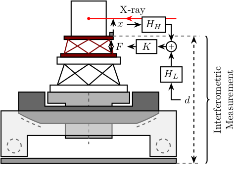
3 Uni-axial Model
3.1 Uni-axial Model - Micro Station
\begin{tikzpicture} % ==================== % Parameters % ==================== \def\massw{2.2} % Width of the masses \def\massh{0.8} % Height of the masses \def\spaceh{1.2} % Height of the springs/dampers \def\dispw{0.4} % Width of the dashed line for the displacement \def\disph{0.3} % Height of the arrow for the displacements \def\bracs{0.05} % Brace spacing vertically \def\brach{-12pt} % Brace shift horizontaly \def\fsensh{0.2} % Height of the force sensor \def\velsize{0.2} % Size of the velocity sensor % ==================== % ==================== % Ground % ==================== \draw (-0.5*\massw, 0) -- (0.5*\massw, 0); % ==================== % ==================== % Granite \begin{scope}[shift={(0, 0)}] % Mass \draw[fill=white] (-0.5*\massw, \spaceh) rectangle (0.5*\massw, \spaceh+\massh) node[pos=0.5]{$m_{g}$}; % Spring, Damper, and Actuator \draw[spring] (-0.4*\massw, 0) -- (-0.4*\massw, \spaceh) node[midway, left=0.1]{$k_{g}$}; \draw[damper] (0, 0) -- ( 0, \spaceh) node[midway, left=0.2]{$c_{g}$}; % Legend \draw[decorate, decoration={brace, amplitude=8pt}, xshift=\brach] % (-0.5*\massw, \bracs) -- (-0.5*\massw, \spaceh+\massh-\bracs) node[midway,rotate=90,anchor=south,yshift=10pt]{Granite}; \end{scope} % ==================== % ==================== % Stages \begin{scope}[shift={(0, \spaceh+\massh)}] % Mass \draw[fill=white] (-0.5*\massw, \spaceh) rectangle (0.5*\massw, \spaceh+\massh) node[pos=0.5]{$m_{t}$}; % Spring, Damper, and Actuator \draw[spring] (-0.4*\massw, 0) -- (-0.4*\massw, \spaceh) node[midway, left=0.1]{$k_{t}$}; \draw[damper] (0, 0) -- ( 0, \spaceh) node[midway, left=0.2]{$c_{t}$}; % Legend \draw[decorate, decoration={brace, amplitude=8pt}, xshift=\brach] % (-0.5*\massw, \bracs) -- (-0.5*\massw, \spaceh+\massh-\bracs) node[midway,rotate=90,anchor=south,yshift=10pt]{$T_y$/$R_y$/$R_z$}; \end{scope} % ==================== % ==================== % Hexapod \begin{scope}[shift={(0, 2*(\spaceh+\massh))}] % Mass \draw[fill=white] (-0.5*\massw, \spaceh) rectangle (0.5*\massw, \spaceh+\massh) node[pos=0.5]{$m_{m}$}; % Spring, Damper, and Actuator \draw[spring] (-0.4*\massw, 0) -- (-0.4*\massw, \spaceh) node[midway, left=0.1]{$k_{m}$}; \draw[damper] (0, 0) -- ( 0, \spaceh) node[midway, left=0.2]{$c_{m}$}; % Legend \draw[decorate, decoration={brace, amplitude=8pt}, xshift=\brach] % (-0.5*\massw, \bracs) -- (-0.5*\massw, \spaceh+\massh-\bracs) node[midway,rotate=90,anchor=south,yshift=10pt]{Hexapod}; \end{scope} % ==================== \end{tikzpicture}
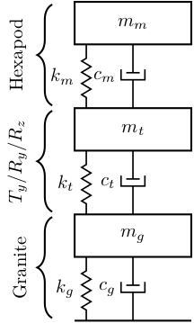
3.2 Uni-axial Model - NASS
\begin{tikzpicture} % ==================== % Parameters % ==================== \def\massw{2.2} % Width of the masses \def\massh{0.8} % Height of the masses \def\spaceh{1.2} % Height of the springs/dampers \def\dispw{0.4} % Width of the dashed line for the displacement \def\disph{0.3} % Height of the arrow for the displacements \def\bracs{0.05} % Brace spacing vertically \def\brach{-12pt} % Brace shift horizontaly \def\fsensh{0.2} % Height of the force sensor \def\velsize{0.2} % Size of the velocity sensor % ==================== % ==================== % Ground % ==================== \draw (-0.5*\massw, 0) -- (0.5*\massw, 0); % \node[ground={\massw}{0.1*\massw}] at (0, 0) {}; \draw[dashed] (0.5*\massw, 0) -- ++(\dispw, 0); \draw[->] (0.5*\massw+0.5*\dispw, 0) -- ++(0, \disph) node[right]{$x_{w}$}; % ==================== % ==================== % Granite \begin{scope}[shift={(0, 0)}] % Mass \draw[fill=white] (-0.5*\massw, \spaceh) rectangle (0.5*\massw, \spaceh+\massh) node[pos=0.5]{$m_{g}$}; % Velocity Sensor \node[inertialsensor={\velsize}] (velg) at (0.5*\massw, \spaceh+\massh){}; \node[right] at (velg.north east) {$x_g$}; % Spring, Damper, and Actuator \draw[spring] (-0.4*\massw, 0) -- (-0.4*\massw, \spaceh) node[midway, left=0.1]{$k_{g}$}; \draw[damper] (0, 0) -- ( 0, \spaceh) node[midway, left=0.2]{$c_{g}$}; % Displacements \draw[dashed] (0.5*\massw, \spaceh+\massh) -- ++(2*\dispw, 0) coordinate(xg); % \draw[->] (0.5*\massw+0.5*\dispw, \spaceh) -- ++(0, \disph) node[right]{$x_{g}$}; % Legend \draw[decorate, decoration={brace, amplitude=8pt}, xshift=\brach] % (-0.5*\massw, \bracs) -- (-0.5*\massw, \spaceh+\massh-\bracs) node[midway,rotate=90,anchor=south,yshift=10pt]{Granite}; \end{scope} % ==================== % ==================== % Stages \begin{scope}[shift={(0, \spaceh+\massh)}] % Mass \draw[fill=white] (-0.5*\massw, \spaceh) rectangle (0.5*\massw, \spaceh+\massh) node[pos=0.5]{$m_{t}$}; % Spring, Damper, and Actuator \draw[spring] (-0.4*\massw, 0) -- (-0.4*\massw, \spaceh) node[midway, left=0.1]{$k_{t}$}; \draw[damper] (0, 0) -- ( 0, \spaceh) node[midway, left=0.2]{$c_{t}$}; \draw[actuator] ( 0.3*\massw, 0) -- ( 0.3*\massw, \spaceh) node[midway, right=0.1](ft){$f_t$}; % Displacements % \draw[dashed] (0.5*\massw, \spaceh) -- ++(\dispw, 0); % \draw[->] (0.5*\massw+0.5*\dispw, \spaceh) -- ++(0, \disph) node[right]{$x_{t}$}; % Legend \draw[decorate, decoration={brace, amplitude=8pt}, xshift=\brach] % (-0.5*\massw, \bracs) -- (-0.5*\massw, \spaceh+\massh-\bracs) node[midway,rotate=90,anchor=south,yshift=10pt]{$T_y$/$R_y$/$R_z$}; \end{scope} % ==================== % ==================== % Hexapod \begin{scope}[shift={(0, 2*(\spaceh+\massh))}] % Mass \draw[fill=white] (-0.5*\massw, \spaceh) rectangle (0.5*\massw, \spaceh+\massh) node[pos=0.5]{$m_{m}$}; % Velocity Sensor \node[inertialsensor={\velsize}] (velm) at (0.5*\massw, \spaceh+\massh){}; \node[right] at (velm.north east) {$x_m$}; % Spring, Damper, and Actuator \draw[spring] (-0.4*\massw, 0) -- (-0.4*\massw, \spaceh) node[midway, left=0.1]{$k_{m}$}; \draw[damper] (0, 0) -- ( 0, \spaceh) node[midway, left=0.2]{$c_{m}$}; % \draw[actuator] ( 0.4*\massw, 0) -- ( 0.4*\massw, \spaceh) node[midway, right=0.1](F){$F$}; % Displacements % \draw[dashed] (0.5*\massw, \spaceh) -- ++(\dispw, 0); % \draw[->] (0.5*\massw+0.5*\dispw, \spaceh) -- ++(0, \disph) node[right]{$x_{m}$}; % Legend \draw[decorate, decoration={brace, amplitude=8pt}, xshift=\brach] % (-0.5*\massw, \bracs) -- (-0.5*\massw, \spaceh+\massh-\bracs) node[midway,rotate=90,anchor=south,yshift=10pt]{Hexapod}; \end{scope} % ==================== % ==================== % NASS \begin{scope}[shift={(0, 3*(\spaceh+\massh))}] % Mass \draw[fill=white] (-0.5*\massw, \spaceh) rectangle (0.5*\massw, \spaceh+\massh) node[pos=0.5]{$m_{n}+m_{s}$}; % External Force \draw[->] (0, \spaceh+\massh) node[]{$\bullet$} -- ++(0, 0.5*\massh) node[right]{$f_i$}; % Force Sensor \node[forcesensor={\massw}{\fsensh}] (fsensn) at (0, \spaceh-\fsensh){}; \node[right] at (fsensn.east) {$f_n$}; % Velocity Sensor \node[inertialsensor={\velsize}] (veln) at (0.5*\massw, \spaceh+\massh) {}; \node[right] at (veln.north east) {$x_n$}; % Spring, Damper, and Actuator \draw[spring] (-0.4*\massw, 0) -- (-0.4*\massw, \spaceh-\fsensh) node[midway, left=0.1]{$k_{n}$}; \draw[damper] (0, 0) -- ( 0, \spaceh-\fsensh) node[midway, left=0.2]{$c_{n}$}; \draw[actuator] ( 0.3*\massw, 0) -- ( 0.3*\massw, \spaceh-\fsensh) node[midway, right=0.1](F){$f$}; % Displacements \draw[dashed] (0.5*\massw, \spaceh+\massh) -- ++(2*\dispw, 0) coordinate(xn); % \draw[->] (0.5*\massw+0.5*\dispw, \spaceh) -- ++(0, \disph) node[right]{$x_{n}$}; % Legend \draw[decorate, decoration={brace, amplitude=8pt}, xshift=\brach] % (-0.5*\massw, \bracs) -- (-0.5*\massw, \spaceh+\massh-\bracs) node[midway,rotate=90,anchor=south,yshift=10pt]{NASS}; \end{scope} % ==================== % ==================== % Measured Displacement \draw[<->, dashed] ($(xg)+(-0.1, 0)$) -- node[below right]{$d$} ($(xn)+(-0.1, 0)$); % ==================== \end{tikzpicture}
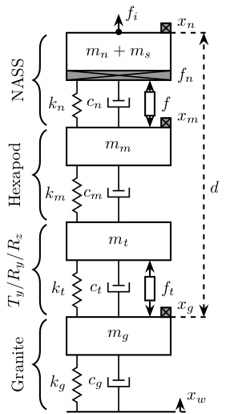
3.3 Uni-axial Model - Spindle
\begin{tikzpicture} % ==================== % Parameters % ==================== \def\massw{2.2} % Width of the masses \def\massh{0.8} % Height of the masses \def\spaceh{1.2} % Height of the springs/dampers \def\dispw{0.4} % Width of the dashed line for the displacement \def\disph{0.3} % Height of the arrow for the displacements \def\bracs{0.05} % Brace spacing vertically \def\brach{-12pt} % Brace shift horizontaly \def\fsensh{0.2} % Height of the force sensor \def\velsize{0.2} % Size of the velocity sensor % ==================== % ==================== % Ground % ==================== \draw (-0.5*\massw, 0) -- (0.5*\massw, 0); % ==================== % ==================== % Granite \begin{scope}[shift={(0, 0)}] % Mass \draw[fill=white] (-0.5*\massw, \spaceh) rectangle (0.5*\massw, \spaceh+\massh) node[pos=0.5]{$m_{g}$}; % Spring, Damper, and Actuator \draw[spring] (-0.4*\massw, 0) -- (-0.4*\massw, \spaceh) node[midway, left=0.1]{$k_{g}$}; \draw[damper] (0, 0) -- ( 0, \spaceh) node[midway, left=0.2]{$c_{g}$}; % Displacements \draw[dashed] (0.5*\massw, \spaceh+\massh) -- ++(2*\dispw, 0) coordinate(xg); % Legend \draw[decorate, decoration={brace, amplitude=8pt}, xshift=\brach] % (-0.5*\massw, \bracs) -- (-0.5*\massw, \spaceh+\massh-\bracs) node[midway,rotate=90,anchor=south,yshift=10pt]{Granite}; \end{scope} % ==================== % ==================== % Spindle \begin{scope}[shift={(0, \spaceh+\massh)}] % Mass \draw[fill=white] (-0.5*\massw, \spaceh) rectangle (0.5*\massw, \spaceh+\massh) node[pos=0.5]{$m_{s}$}; % Spring, Damper, and Actuator \draw[spring] (-0.4*\massw, 0) -- (-0.4*\massw, \spaceh) node[midway, left=0.1]{$k_{s}$}; \draw[damper] (0, 0) -- ( 0, \spaceh) node[midway, left=0.2]{$c_{s}$}; \draw[actuator] ( 0.3*\massw, 0) -- ( 0.3*\massw, \spaceh) node[midway, right=0.1](ft){$f$}; % Displacements \draw[dashed] (0.5*\massw, \spaceh+\massh) -- ++(2*\dispw, 0) coordinate(xs); % Legend \draw[decorate, decoration={brace, amplitude=8pt}, xshift=\brach] % (-0.5*\massw, \bracs) -- (-0.5*\massw, \spaceh+\massh-\bracs) node[midway,rotate=90,anchor=south,yshift=10pt]{Spindle}; \end{scope} % ==================== % ==================== % Measured Displacement \draw[<->, dashed] ($(xg)+(-0.1, 0)$) -- node[below right]{$d$} ($(xs)+(-0.1, 0)$); % ==================== \end{tikzpicture}
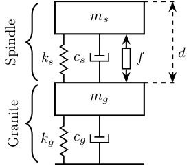
3.4 Uni-axial Model - DVF
\begin{tikzpicture} % ==================== % Parameters % ==================== \def\massw{2.2} % Width of the masses \def\massh{0.8} % Height of the masses \def\spaceh{1.2} % Height of the springs/dampers \def\dispw{0.4} % Width of the dashed line for the displacement \def\disph{0.3} % Height of the arrow for the displacements \def\bracs{0.05} % Brace spacing vertically \def\brach{-12pt} % Brace shift horizontaly \def\fsensh{0.2} % Height of the force sensor \def\velsize{0.2} % Size of the velocity sensor % ==================== % ==================== % Ground % ==================== \draw (-0.5*\massw, 0) -- (0.5*\massw, 0); % \node[ground={\massw}{0.1*\massw}] at (0, 0) {}; \draw[dashed] (0.5*\massw, 0) -- ++(\dispw, 0); \draw[->] (0.5*\massw+0.5*\dispw, 0) -- ++(0, \disph) node[right]{$x_{w}$}; % ==================== % ==================== % Granite \begin{scope}[shift={(0, 0)}] % Mass \draw[fill=white] (-0.5*\massw, \spaceh) rectangle (0.5*\massw, \spaceh+\massh) node[pos=0.5]{$m_{g}$}; % Velocity Sensor \node[inertialsensor={\velsize}] (velg) at (0.5*\massw, \spaceh+\massh){}; \node[right] at (velg.north east) {$x_g$}; % Spring, Damper, and Actuator \draw[spring] (-0.4*\massw, 0) -- (-0.4*\massw, \spaceh) node[midway, left=0.1]{$k_{g}$}; \draw[damper] (0, 0) -- ( 0, \spaceh) node[midway, left=0.2]{$c_{g}$}; % Displacements % \draw[dashed] (0.5*\massw, \spaceh+\massh) -- ++(2*\dispw, 0) coordinate(xg); % \draw[->] (0.5*\massw+0.5*\dispw, \spaceh) -- ++(0, \disph) node[right]{$x_{g}$}; % Legend % \draw[decorate, decoration={brace, amplitude=8pt}, xshift=\brach] % % (-0.5*\massw, \bracs) -- (-0.5*\massw, \spaceh+\massh-\bracs) node[midway,rotate=90,anchor=south,yshift=10pt]{Granite}; \end{scope} % ==================== % ==================== % Stages \begin{scope}[shift={(0, \spaceh+\massh)}] % Mass \draw[fill=white] (-0.5*\massw, \spaceh) rectangle (0.5*\massw, \spaceh+\massh) node[pos=0.5]{$m_{t}$}; % Spring, Damper, and Actuator \draw[spring] (-0.4*\massw, 0) -- (-0.4*\massw, \spaceh) node[midway, left=0.1]{$k_{t}$}; \draw[damper] (0, 0) -- ( 0, \spaceh) node[midway, left=0.2]{$c_{t}$}; \draw[actuator] ( 0.3*\massw, 0) -- ( 0.3*\massw, \spaceh) node[midway, right=0.1](ft){$f_t$}; % Displacements % \draw[dashed] (0.5*\massw, \spaceh) -- ++(\dispw, 0); % \draw[->] (0.5*\massw+0.5*\dispw, \spaceh) -- ++(0, \disph) node[right]{$x_{t}$}; % Legend % \draw[decorate, decoration={brace, amplitude=8pt}, xshift=\brach] % % (-0.5*\massw, \bracs) -- (-0.5*\massw, \spaceh+\massh-\bracs) node[midway,rotate=90,anchor=south,yshift=10pt]{$T_y$/$R_y$/$R_z$}; \end{scope} % ==================== % ==================== % Hexapod \begin{scope}[shift={(0, 2*(\spaceh+\massh))}] % Mass \draw[fill=white] (-0.5*\massw, \spaceh) rectangle (0.5*\massw, \spaceh+\massh) node[pos=0.5]{$m_{m}$}; % Velocity Sensor \node[inertialsensor={\velsize}] (velm) at (0.5*\massw, \spaceh+\massh){}; \node[right] at (velm.north east) {$x_m$}; % Spring, Damper, and Actuator \draw[spring] (-0.4*\massw, 0) -- (-0.4*\massw, \spaceh) node[midway, left=0.1]{$k_{m}$}; \draw[damper] (0, 0) -- ( 0, \spaceh) node[midway, left=0.2]{$c_{m}$}; % \draw[actuator] ( 0.4*\massw, 0) -- ( 0.4*\massw, \spaceh) node[midway, right=0.1](F){$F$}; % Displacements % \draw[dashed] (0.5*\massw, \spaceh) -- ++(\dispw, 0); % \draw[->] (0.5*\massw+0.5*\dispw, \spaceh) -- ++(0, \disph) node[right]{$x_{m}$}; % Legend % \draw[decorate, decoration={brace, amplitude=8pt}, xshift=\brach] % % (-0.5*\massw, \bracs) -- (-0.5*\massw, \spaceh+\massh-\bracs) node[midway,rotate=90,anchor=south,yshift=10pt]{Hexapod}; \end{scope} % ==================== % ==================== % NASS \begin{scope}[shift={(0, 3*(\spaceh+\massh))}] % Mass \draw[fill=white] (-0.5*\massw, \spaceh) rectangle (0.5*\massw, \spaceh+\massh) node[pos=0.5]{$m_{n}+m_{s}$}; % External Force \draw[->] (0, \spaceh+\massh) node[]{$\bullet$} -- ++(0, 0.5*\massh) node[right]{$f_i$}; % Force Sensor \node[forcesensor={\massw}{\fsensh}] (fsensn) at (0, \spaceh-\fsensh){}; \node[right] (fn) at (fsensn.east) {$f_n$}; % Velocity Sensor \node[inertialsensor={\velsize}] (veln) at (0.5*\massw, \spaceh+\massh) {}; \node[right] (xn) at (veln.north east) {$x_n$}; % Spring, Damper, and Actuator \draw[spring] (-0.4*\massw, 0) -- (-0.4*\massw, \spaceh-\fsensh) node[midway, left=0.1]{$k_{n}$}; \draw[damper] (0, 0) -- ( 0, \spaceh-\fsensh) node[midway, left=0.2]{$c_{n}$}; \draw[actuator] ( 0.3*\massw, 0) -- ( 0.3*\massw, \spaceh-\fsensh) node[midway, right=0.1](f){$f$}; % Displacements % \draw[dashed] (0.5*\massw, \spaceh+\massh) -- ++(2*\dispw, 0) coordinate(xn); % \draw[->] (0.5*\massw+0.5*\dispw, \spaceh) -- ++(0, \disph) node[right]{$x_{n}$}; % Legend % \draw[decorate, decoration={brace, amplitude=8pt}, xshift=\brach] % % (-0.5*\massw, \bracs) -- (-0.5*\massw, \spaceh+\massh-\bracs) node[midway,rotate=90,anchor=south,yshift=10pt]{NASS}; \end{scope} % ==================== % ==================== % Measured Displacement % \draw[<->, dashed] ($(xg)+(-0.1, 0)$) -- node[below right]{$d$} ($(xn)+(-0.1, 0)$); % ==================== % ==================== % DVF Control \node[block={2em}{1.5em}, below right=0.4 and 0.1 of xn] (ppf) {$K$}; \draw[->] (xn.east) -| (ppf.north); \draw[->] (ppf.south) |- (f.east); % ==================== % ==================== % % IFF Control % \node[block={2em}{1.5em}, right=0.3 of fn] (iff) {$g\frac{1}{s}$}; % \draw[->] (fn.east) -- (iff.west); % \draw[->] (iff.south) |- (f.east); % ==================== \end{tikzpicture}
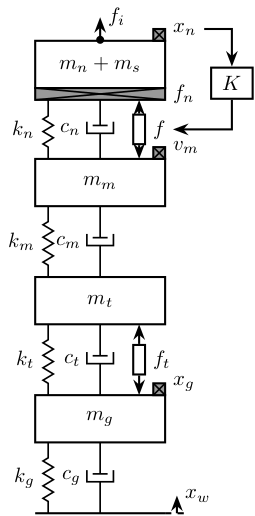
3.5 Uni-axial Model - HAC-LAC
\begin{tikzpicture} % ==================== % Parameters % ==================== \def\massw{2.2} % Width of the masses \def\massh{0.8} % Height of the masses \def\spaceh{1.2} % Height of the springs/dampers \def\dispw{1.2} % Width of the dashed line for the displacement \def\disph{0.3} % Height of the arrow for the displacements \def\bracs{0.05} % Brace spacing vertically \def\brach{-12pt} % Brace shift horizontaly \def\fsensh{0.2} % Height of the force sensor \def\velsize{0.2} % Size of the velocity sensor % ==================== % ==================== % Ground % ==================== \draw (-0.5*\massw, 0) -- (0.5*\massw, 0); % \node[ground={\massw}{0.1*\massw}] at (0, 0) {}; \draw[dashed] (0.5*\massw, 0) -- ++(\dispw, 0); \draw[->] (0.5*\massw+0.5*\dispw, 0) -- ++(0, \disph) node[right]{$x_{w}$}; % ==================== % ==================== % Granite \begin{scope}[shift={(0, 0)}] % Mass \draw[fill=white] (-0.5*\massw, \spaceh) rectangle (0.5*\massw, \spaceh+\massh) node[pos=0.5]{$m_{g}$}; % Velocity Sensor \node[inertialsensor={\velsize}] (velg) at (0.5*\massw, \spaceh+\massh){}; \node[right] at (velg.north east) {$x_g$}; % Spring, Damper, and Actuator \draw[spring] (-0.4*\massw, 0) -- (-0.4*\massw, \spaceh) node[midway, left=0.1]{$k_{g}$}; \draw[damper] (0, 0) -- ( 0, \spaceh) node[midway, left=0.2]{$c_{g}$}; % Displacements \draw[dashed] (0.5*\massw, \spaceh+\massh) -- ++(2*\dispw, 0) coordinate(xg); % \draw[->] (0.5*\massw+0.5*\dispw, \spaceh) -- ++(0, \disph) node[right]{$x_{g}$}; % Legend % \draw[decorate, decoration={brace, amplitude=8pt}, xshift=\brach] % % (-0.5*\massw, \bracs) -- (-0.5*\massw, \spaceh+\massh-\bracs) node[midway,rotate=90,anchor=south,yshift=10pt]{Granite}; \end{scope} % ==================== % ==================== % Stages \begin{scope}[shift={(0, \spaceh+\massh)}] % Mass \draw[fill=white] (-0.5*\massw, \spaceh) rectangle (0.5*\massw, \spaceh+\massh) node[pos=0.5]{$m_{t}$}; % Spring, Damper, and Actuator \draw[spring] (-0.4*\massw, 0) -- (-0.4*\massw, \spaceh) node[midway, left=0.1]{$k_{t}$}; \draw[damper] (0, 0) -- ( 0, \spaceh) node[midway, left=0.2]{$c_{t}$}; \draw[actuator] ( 0.3*\massw, 0) -- ( 0.3*\massw, \spaceh) node[midway, right=0.1](ft){$f_t$}; % Displacements % \draw[dashed] (0.5*\massw, \spaceh) -- ++(\dispw, 0); % \draw[->] (0.5*\massw+0.5*\dispw, \spaceh) -- ++(0, \disph) node[right]{$x_{t}$}; % Legend % \draw[decorate, decoration={brace, amplitude=8pt}, xshift=\brach] % % (-0.5*\massw, \bracs) -- (-0.5*\massw, \spaceh+\massh-\bracs) node[midway,rotate=90,anchor=south,yshift=10pt]{$T_y$/$R_y$/$R_z$}; \end{scope} % ==================== % ==================== % Hexapod \begin{scope}[shift={(0, 2*(\spaceh+\massh))}] % Mass \draw[fill=white] (-0.5*\massw, \spaceh) rectangle (0.5*\massw, \spaceh+\massh) node[pos=0.5]{$m_{m}$}; % Velocity Sensor \node[inertialsensor={\velsize}] (velm) at (0.5*\massw, \spaceh+\massh){}; \node[right] at (velm.north east) {$x_m$}; % Spring, Damper, and Actuator \draw[spring] (-0.4*\massw, 0) -- (-0.4*\massw, \spaceh) node[midway, left=0.1]{$k_{m}$}; \draw[damper] (0, 0) -- ( 0, \spaceh) node[midway, left=0.2]{$c_{m}$}; % \draw[actuator] ( 0.4*\massw, 0) -- ( 0.4*\massw, \spaceh) node[midway, right=0.1](F){$F$}; % Displacements % \draw[dashed] (0.5*\massw, \spaceh) -- ++(\dispw, 0); % \draw[->] (0.5*\massw+0.5*\dispw, \spaceh) -- ++(0, \disph) node[right]{$x_{m}$}; % Legend % \draw[decorate, decoration={brace, amplitude=8pt}, xshift=\brach] % % (-0.5*\massw, \bracs) -- (-0.5*\massw, \spaceh+\massh-\bracs) node[midway,rotate=90,anchor=south,yshift=10pt]{Hexapod}; \end{scope} % ==================== % ==================== % NASS \begin{scope}[shift={(0, 3*(\spaceh+\massh))}] % Mass \draw[fill=white] (-0.5*\massw, \spaceh) rectangle (0.5*\massw, \spaceh+\massh) node[pos=0.5]{$m_{n}+m_{s}$}; % External Force \draw[->] (0, \spaceh+\massh) node[]{$\bullet$} -- ++(0, 0.5*\massh) node[right]{$f_i$}; % Force Sensor \node[forcesensor={\massw}{\fsensh}] (fsensn) at (0, \spaceh-\fsensh){}; \node[right] (fn) at (fsensn.east) {$f_n$}; % Velocity Sensor \node[inertialsensor={\velsize}] (veln) at (0.5*\massw, \spaceh+\massh) {}; \node[right] (xn) at (veln.north east) {$x_n$}; % Spring, Damper, and Actuator \draw[spring] (-0.4*\massw, 0) -- (-0.4*\massw, \spaceh-\fsensh) node[midway, left=0.1]{$k_{n}$}; \draw[damper] (0, 0) -- ( 0, \spaceh-\fsensh) node[midway, left=0.2]{$c_{n}$}; \draw[actuator] ( 0.3*\massw, 0) -- ( 0.3*\massw, \spaceh-\fsensh) node[midway, right=0.1](f){$f$}; % Displacements \draw[dashed] (0.5*\massw, \spaceh+\massh) -- ++(2*\dispw, 0) coordinate(xnpos); % \draw[->] (0.5*\massw+0.5*\dispw, \spaceh) -- ++(0, \disph) node[right]{$x_{n}$}; % Legend % \draw[decorate, decoration={brace, amplitude=8pt}, xshift=\brach] % % (-0.5*\massw, \bracs) -- (-0.5*\massw, \spaceh+\massh-\bracs) node[midway,rotate=90,anchor=south,yshift=10pt]{NASS}; \end{scope} % ==================== % ==================== % Measured Displacement \draw[<->, dashed] ($(xg)+(-0.1, 0)$) -- node[left](d){$d$} ($(xnpos)+(-0.1, 0)$); % ==================== % ==================== % DVF Control % \node[block={2em}{1.5em}, below right=0.4 and 0.1 of xn] (ppf) {$K$}; % \draw[->] (xn.east) -| (ppf.north); % \draw[->] (ppf.south) |- (f.east); % ==================== % ==================== % IFF Control \node[block={2em}{1.5em}, right=0.8 of fn] (iff) {$g\frac{1}{s}$}; \node[addb, right=0.5 of f.east] (ctrladd) {}; \node[block={2em}{1.5em}] (ctrl) at (ctrladd|-d) {$K$}; \draw[->] (fn.east) -- (iff.west); \draw[->] (iff.south) |- (ctrladd.east); \draw[->] (ctrladd.west) -- (f.east); \draw[->] (d.west) -- (ctrl.east); \draw[->] (ctrl.north) -- (ctrladd.south); % ==================== \end{tikzpicture}

3.6 Uni-axial Model - Skyhook Damper
\begin{tikzpicture} % ==================== % Parameters % ==================== \def\massw{2.2} % Width of the masses \def\massh{0.8} % Height of the masses \def\spaceh{1.2} % Height of the springs/dampers \def\dispw{0.4} % Width of the dashed line for the displacement \def\disph{0.3} % Height of the arrow for the displacements \def\bracs{0.05} % Brace spacing vertically \def\brach{-12pt} % Brace shift horizontaly \def\fsensh{0.2} % Height of the force sensor \def\velsize{0.2} % Size of the velocity sensor % ==================== % ==================== % Ground % ==================== \draw (-0.5*\massw, 0) -- (0.5*\massw, 0); % \node[ground={\massw}{0.1*\massw}] at (0, 0) {}; \draw[dashed] (0.5*\massw, 0) -- ++(\dispw, 0); \draw[->] (0.5*\massw+0.5*\dispw, 0) -- ++(0, \disph) node[right]{$x_{w}$}; % ==================== % ==================== % Granite \begin{scope}[shift={(0, 0)}] % Mass \draw[fill=white] (-0.5*\massw, \spaceh) rectangle (0.5*\massw, \spaceh+\massh) node[pos=0.5]{$m_{g}$}; % Velocity Sensor \node[inertialsensor={\velsize}] (velg) at (0.5*\massw, \spaceh+\massh){}; \node[right] at (velg.north east) {$x_g$}; % Spring, Damper, and Actuator \draw[spring] (-0.4*\massw, 0) -- (-0.4*\massw, \spaceh) node[midway, left=0.1]{$k_{g}$}; \draw[damper] (0, 0) -- ( 0, \spaceh) node[midway, left=0.2]{$c_{g}$}; % Displacements % \draw[dashed] (0.5*\massw, \spaceh+\massh) -- ++(2*\dispw, 0) coordinate(xg); % \draw[->] (0.5*\massw+0.5*\dispw, \spaceh) -- ++(0, \disph) node[right]{$x_{g}$}; % Legend % \draw[decorate, decoration={brace, amplitude=8pt}, xshift=\brach] % % (-0.5*\massw, \bracs) -- (-0.5*\massw, \spaceh+\massh-\bracs) node[midway,rotate=90,anchor=south,yshift=10pt]{Granite}; \end{scope} % ==================== % ==================== % Stages \begin{scope}[shift={(0, \spaceh+\massh)}] % Mass \draw[fill=white] (-0.5*\massw, \spaceh) rectangle (0.5*\massw, \spaceh+\massh) node[pos=0.5]{$m_{t}$}; % Spring, Damper, and Actuator \draw[spring] (-0.4*\massw, 0) -- (-0.4*\massw, \spaceh) node[midway, left=0.1]{$k_{t}$}; \draw[damper] (0, 0) -- ( 0, \spaceh) node[midway, left=0.2]{$c_{t}$}; \draw[actuator] ( 0.3*\massw, 0) -- ( 0.3*\massw, \spaceh) node[midway, right=0.1](ft){$f_t$}; % Displacements % \draw[dashed] (0.5*\massw, \spaceh) -- ++(\dispw, 0); % \draw[->] (0.5*\massw+0.5*\dispw, \spaceh) -- ++(0, \disph) node[right]{$x_{t}$}; % Legend % \draw[decorate, decoration={brace, amplitude=8pt}, xshift=\brach] % % (-0.5*\massw, \bracs) -- (-0.5*\massw, \spaceh+\massh-\bracs) node[midway,rotate=90,anchor=south,yshift=10pt]{$T_y$/$R_y$/$R_z$}; \end{scope} % ==================== % ==================== % Hexapod \begin{scope}[shift={(0, 2*(\spaceh+\massh))}] % Mass \draw[fill=white] (-0.5*\massw, \spaceh) rectangle (0.5*\massw, \spaceh+\massh) node[pos=0.5]{$m_{m}$}; % Velocity Sensor \node[inertialsensor={\velsize}] (velm) at (0.5*\massw, \spaceh+\massh){}; \node[right] at (velm.north east) {$x_m$}; % Spring, Damper, and Actuator \draw[spring] (-0.4*\massw, 0) -- (-0.4*\massw, \spaceh) node[midway, left=0.1]{$k_{m}$}; \draw[damper] (0, 0) -- ( 0, \spaceh) node[midway, left=0.2]{$c_{m}$}; % \draw[actuator] ( 0.4*\massw, 0) -- ( 0.4*\massw, \spaceh) node[midway, right=0.1](F){$F$}; % Displacements % \draw[dashed] (0.5*\massw, \spaceh) -- ++(\dispw, 0); % \draw[->] (0.5*\massw+0.5*\dispw, \spaceh) -- ++(0, \disph) node[right]{$x_{m}$}; % Legend % \draw[decorate, decoration={brace, amplitude=8pt}, xshift=\brach] % % (-0.5*\massw, \bracs) -- (-0.5*\massw, \spaceh+\massh-\bracs) node[midway,rotate=90,anchor=south,yshift=10pt]{Hexapod}; \end{scope} % ==================== % ==================== % NASS \begin{scope}[shift={(0, 3*(\spaceh+\massh))}] % Mass \draw[fill=white] (-0.5*\massw, \spaceh) rectangle (0.5*\massw, \spaceh+\massh) node[pos=0.5]{$m_{n}+m_{s}$}; % External Force \draw[->] (0, \spaceh+\massh) node[]{$\bullet$} -- ++(0, 0.5*\massh) node[right]{$f_i$}; % Force Sensor \node[forcesensor={\massw}{\fsensh}] (fsensn) at (0, \spaceh-\fsensh){}; \node[right] (fn) at (fsensn.east) {$f_n$}; % Velocity Sensor \node[inertialsensor={\velsize}] (veln) at (0.5*\massw, \spaceh+\massh) {}; \node[right] (xn) at (veln.north east) {$x_n$}; % Spring, Damper, and Actuator \draw[spring] (-0.4*\massw, 0) -- (-0.4*\massw, \spaceh-\fsensh) node[midway, left=0.1]{$k_{n}$}; \draw[damper] (0, 0) -- ( 0, \spaceh-\fsensh) node[midway, left=0.2]{$c_{n}$}; \draw[actuator] ( 0.3*\massw, 0) -- ( 0.3*\massw, \spaceh-\fsensh) node[midway, right=0.1](f){$f$}; % Displacements % \draw[dashed] (0.5*\massw, \spaceh+\massh) -- ++(2*\dispw, 0) coordinate(xn); % \draw[->] (0.5*\massw+0.5*\dispw, \spaceh) -- ++(0, \disph) node[right]{$x_{n}$}; % Sky Hook Damping \draw (0.5*\massw, \spaceh+0.5*\massh) -- ++(0.5*\massw, 0) coordinate(shdtop); \draw[damper] (shdtop) -- node[midway, left=0.2]{$c$} ++(0, -\massh) coordinate(sky); \node[ground={0.8}{0.05}] at (sky){}; % Legend % \draw[decorate, decoration={brace, amplitude=8pt}, xshift=\brach] % % (-0.5*\massw, \bracs) -- (-0.5*\massw, \spaceh+\massh-\bracs) node[midway,rotate=90,anchor=south,yshift=10pt]{NASS}; \end{scope} % ==================== % ==================== % Measured Displacement % \draw[<->, dashed] ($(xg)+(-0.1, 0)$) -- node[below right]{$d$} ($(xn)+(-0.1, 0)$); % ==================== % ==================== % % PPF Control % \node[block={2em}{1.5em}, below right=0.4 and 0.1 of xn] (ppf) {$K$}; % \draw[->] (xn.east) -| (ppf.north); % \draw[->] (ppf.south) |- (f.east); % ==================== % ==================== % % IFF Control % \node[block={2em}{1.5em}, right=0.3 of fn] (iff) {$g\frac{1}{s}$}; % \draw[->] (fn.east) -- (iff.west); % \draw[->] (iff.south) |- (f.east); % ==================== \end{tikzpicture}
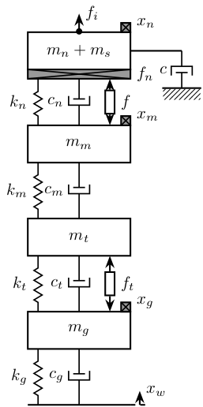
4 Uni-axial Model - bis
4.1 Uni-axial Model - Micro Station
\begin{tikzpicture} % ==================== % Parameters % ==================== \def\massw{2.2} % Width of the masses \def\massh{0.8} % Height of the masses \def\spaceh{1.2} % Height of the springs/dampers \def\dispw{0.4} % Width of the dashed line for the displacement \def\disph{0.4} % Height of the arrow for the displacements \def\bracs{0.05} % Brace spacing vertically \def\brach{-12pt} % Brace shift horizontaly \def\fsensh{0.2} % Height of the force sensor \def\velsize{0.2} % Size of the velocity sensor % ==================== % ==================== % Ground % ==================== \draw (-0.5*\massw, 0) -- (0.5*\massw, 0); \draw[dashed] (0.5*\massw, 0) -- ++(\dispw, 0); \draw[->] (0.5*\massw+0.5*\dispw, 0) -- ++(0, \disph) node[right]{$x_{w}$}; % ==================== % ==================== % Marble \begin{scope}[shift={(0, 0)}] % Mass \draw[fill=white] (-0.5*\massw, \spaceh) rectangle (0.5*\massw, \spaceh+\massh) node[pos=0.5]{$m_{m}$}; % Spring, Damper, and Actuator \draw[spring] (-0.4*\massw, 0) -- (-0.4*\massw, \spaceh) node[midway, left=0.1]{$k_{m}$}; \draw[damper] (0, 0) -- ( 0, \spaceh) node[midway, left=0.2]{$c_{m}$}; % Legend \draw[decorate, decoration={brace, amplitude=8pt}, xshift=\brach] % (-0.5*\massw, \bracs) -- (-0.5*\massw, \spaceh+\massh-\bracs) node[midway,rotate=90,anchor=south,yshift=10pt]{Marble}; % Displacement \draw[dashed] (0.5*\massw, \spaceh+\massh) -- ++(\dispw, 0); \draw[->] (0.5*\massw+0.5*\dispw, \spaceh+\massh) -- ++(0, \disph) node[right]{$x_{m}$}; \end{scope} % ==================== % ==================== % Stages \begin{scope}[shift={(0, \spaceh+\massh)}] % Mass \draw[fill=white] (-0.5*\massw, \spaceh) rectangle (0.5*\massw, \spaceh+\massh) node[pos=0.5]{$m_{t}$}; % Spring, Damper, and Actuator \draw[spring] (-0.4*\massw, 0) -- (-0.4*\massw, \spaceh) node[midway, left=0.1]{$k_{t}$}; \draw[damper] (0, 0) -- ( 0, \spaceh) node[midway, left=0.2]{$c_{t}$}; % Legend \draw[decorate, decoration={brace, amplitude=8pt}, xshift=\brach] % (-0.5*\massw, \bracs) -- (-0.5*\massw, \spaceh+\massh-\bracs) node[midway,rotate=90,anchor=south,yshift=10pt]{$T_y$/$R_y$/$R_z$}; % Displacement \draw[dashed] (0.5*\massw, \spaceh+\massh) -- ++(\dispw, 0); \draw[->] (0.5*\massw+0.5*\dispw, \spaceh+\massh) -- ++(0, \disph) node[right]{$x_{t}$}; \end{scope} % ==================== % ==================== % Hexapod \begin{scope}[shift={(0, 2*(\spaceh+\massh))}] % Mass \draw[fill=white] (-0.5*\massw, \spaceh) rectangle (0.5*\massw, \spaceh+\massh) node[pos=0.5]{$m_{h}$}; % Spring, Damper, and Actuator \draw[spring] (-0.4*\massw, 0) -- (-0.4*\massw, \spaceh) node[midway, left=0.1]{$k_{h}$}; \draw[damper] (0, 0) -- ( 0, \spaceh) node[midway, left=0.2]{$c_{h}$}; % Legend \draw[decorate, decoration={brace, amplitude=8pt}, xshift=\brach] % (-0.5*\massw, \bracs) -- (-0.5*\massw, \spaceh+\massh-\bracs) node[midway,rotate=90,anchor=south,yshift=10pt]{Hexapod}; % Displacement \draw[dashed] (0.5*\massw, \spaceh+\massh) -- ++(\dispw, 0); \draw[->] (0.5*\massw+0.5*\dispw, \spaceh+\massh) -- ++(0, \disph) node[right]{$x_{h}$}; \end{scope} % ==================== \end{tikzpicture}
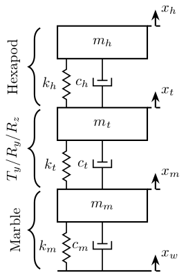
4.2 Uni-axial Model - NASS
\begin{tikzpicture} % ==================== % Parameters % ==================== \def\massw{2.2} % Width of the masses \def\massh{0.8} % Height of the masses \def\spaceh{1.2} % Height of the springs/dampers \def\dispw{0.4} % Width of the dashed line for the displacement \def\disph{0.3} % Height of the arrow for the displacements \def\bracs{0.05} % Brace spacing vertically \def\brach{-12pt} % Brace shift horizontaly \def\fsensh{0.2} % Height of the force sensor \def\velsize{0.2} % Size of the velocity sensor % ==================== % ==================== % Ground % ==================== \draw (-0.5*\massw, 0) -- (0.5*\massw, 0); % \node[ground={\massw}{0.1*\massw}] at (0, 0) {}; \draw[dashed] (0.5*\massw, 0) -- ++(\dispw, 0); \draw[->] (0.5*\massw+0.5*\dispw, 0) -- ++(0, \disph) node[right]{$x_{w}$}; % ==================== % ==================== % Marble \begin{scope}[shift={(0, 0)}] % Mass \draw[fill=white] (-0.5*\massw, \spaceh) rectangle (0.5*\massw, \spaceh+\massh) node[pos=0.5]{$m_{m}$}; % Velocity Sensor \node[inertialsensor={\velsize}] (velg) at (0.5*\massw, \spaceh+\massh){}; \node[right] at (velg.north east) {$v_m$}; % Spring, Damper, and Actuator \draw[spring] (-0.4*\massw, 0) -- (-0.4*\massw, \spaceh) node[midway, left=0.1]{$k_{m}$}; \draw[damper] (0, 0) -- ( 0, \spaceh) node[midway, left=0.2]{$c_{m}$}; % Legend \draw[decorate, decoration={brace, amplitude=8pt}, xshift=\brach] % (-0.5*\massw, \bracs) -- (-0.5*\massw, \spaceh+\massh-\bracs) node[midway,rotate=90,anchor=south,yshift=10pt]{Marble}; % Displacements \draw[dashed] (0.5*\massw, \spaceh+\massh) -- ++(2*\dispw, 0) coordinate(xm); \end{scope} % ==================== % ==================== % Stages \begin{scope}[shift={(0, \spaceh+\massh)}] % Mass \draw[fill=white] (-0.5*\massw, \spaceh) rectangle (0.5*\massw, \spaceh+\massh) node[pos=0.5]{$m_{t}$}; % Spring, Damper, and Actuator \draw[spring] (-0.4*\massw, 0) -- (-0.4*\massw, \spaceh) node[midway, left=0.1]{$k_{t}$}; \draw[damper] (0, 0) -- ( 0, \spaceh) node[midway, left=0.2]{$c_{t}$}; \draw[actuator={0.45}{0.2}] ( 0.3*\massw, 0) -- ( 0.3*\massw, \spaceh) node[midway, right=0.1](ft){$f_t$}; % Legend \draw[decorate, decoration={brace, amplitude=8pt}, xshift=\brach] % (-0.5*\massw, \bracs) -- (-0.5*\massw, \spaceh+\massh-\bracs) node[midway,rotate=90,anchor=south,yshift=10pt]{$T_y$/$R_y$/$R_z$}; \end{scope} % ==================== % ==================== % Hexapod \begin{scope}[shift={(0, 2*(\spaceh+\massh))}] % Mass \draw[fill=white] (-0.5*\massw, \spaceh) rectangle (0.5*\massw, \spaceh+\massh) node[pos=0.5]{$m_{h}$}; % Velocity Sensor \node[inertialsensor={\velsize}] (velm) at (0.5*\massw, \spaceh+\massh){}; \node[right] at (velm.north east) {$v_h$}; % Spring, Damper, and Actuator \draw[spring] (-0.4*\massw, 0) -- (-0.4*\massw, \spaceh) node[midway, left=0.1]{$k_{h}$}; \draw[damper] (0, 0) -- ( 0, \spaceh) node[midway, left=0.2]{$c_{h}$}; % \draw[actuator] ( 0.4*\massw, 0) -- ( 0.4*\massw, \spaceh) node[midway, right=0.1](F){$F$}; % Displacements \draw[dashed] (0.5*\massw, \spaceh+\massh) -- ++(3*\dispw, 0) coordinate(drbot); % Legend \draw[decorate, decoration={brace, amplitude=8pt}, xshift=\brach] % (-0.5*\massw, \bracs) -- (-0.5*\massw, \spaceh+\massh-\bracs) node[midway,rotate=90,anchor=south,yshift=10pt]{Hexapod}; \end{scope} % ==================== % ==================== % NASS \begin{scope}[shift={(0, 3*(\spaceh+\massh))}] % Mass \draw[fill=white] (-0.5*\massw, \spaceh) rectangle (0.5*\massw, \spaceh+\massh) node[pos=0.5]{$m_{n}+m_{s}$}; % External Force \draw[->] (0, \spaceh+\massh) node[]{$\bullet$} -- ++(0, 0.5*\massh) node[right]{$f_d$}; % Force Sensor \node[forcesensor={\massw}{\fsensh}] (fsensn) at (0, \spaceh-\fsensh){}; \node[right] at (fsensn.east) {$f_n$}; % Velocity Sensor \node[inertialsensor={\velsize}] (veln) at (0.5*\massw, \spaceh+\massh) {}; \node[right] at (veln.north east) {$v_n$}; % Spring, Damper, and Actuator \draw[spring] (-0.4*\massw, 0) -- (-0.4*\massw, \spaceh-\fsensh) node[midway, left=0.1]{$k_{n}$}; \draw[damper] (0, 0) -- ( 0, \spaceh-\fsensh) node[midway, left=0.2]{$c_{n}$}; \draw[actuator={0.4}{0.2}] ( 0.3*\massw, 0) -- ( 0.3*\massw, \spaceh-\fsensh) node[midway, right=0.1](F){$f$}; % Displacements \draw[dashed] (0.5*\massw, \spaceh+\massh) -- ++(2*\dispw, 0) coordinate(xn) -- ++(\dispw, 0) coordinate(drtop); % Legend \draw[decorate, decoration={brace, amplitude=8pt}, xshift=\brach] % (-0.5*\massw, \bracs) -- (-0.5*\massw, \spaceh+\massh-\bracs) node[midway,rotate=90,anchor=south,yshift=10pt]{NASS}; \end{scope} % ==================== % ==================== % Measured Displacement \draw[<->, dashed] ($(xm)+(-0.1, 0)$) -- coordinate(d) ($(xn)+(-0.1, 0)$); \node[addb={+}{}{}{}{}, right=1 of d](addn){}; \draw[<-] (addn.north) -- ++(0, 1) node[below right]{$n$}; \draw[->] (addn.east) -- ++(1, 0) node[above left]{$d_m$}; \draw[->] (d) node[above right]{$d$} -- (addn.west); % Relative displacement \draw[<->, dashed] ($(drbot)+(-0.1, 0)$) -- node[midway, right]{$d_r$} ($(drtop)+(-0.1, 0)$); % ==================== \end{tikzpicture}

4.3 Uni-axial Model - NASS - Flexible
\begin{tikzpicture} % ==================== % Parameters % ==================== \def\massw{2.2} % Width of the masses \def\massh{0.8} % Height of the masses \def\spaceh{1.2} % Height of the springs/dampers \def\dispw{0.4} % Width of the dashed line for the displacement \def\disph{0.3} % Height of the arrow for the displacements \def\bracs{0.05} % Brace spacing vertically \def\brach{-12pt} % Brace shift horizontaly \def\fsensh{0.2} % Height of the force sensor \def\velsize{0.2} % Size of the velocity sensor % ==================== % ==================== % Ground % ==================== \draw (-0.5*\massw, 0) -- (0.5*\massw, 0); % \node[ground={\massw}{0.1*\massw}] at (0, 0) {}; \draw[dashed] (0.5*\massw, 0) -- ++(\dispw, 0); \draw[->] (0.5*\massw+0.5*\dispw, 0) -- ++(0, \disph) node[right]{$x_{w}$}; % ==================== % ==================== % Marble \begin{scope}[shift={(0, 0)}] % Mass \draw[fill=white] (-0.5*\massw, \spaceh) rectangle (0.5*\massw, \spaceh+\massh) node[pos=0.5]{$m_{m}$}; % Velocity Sensor \node[inertialsensor={\velsize}] (velg) at (0.5*\massw, \spaceh+\massh){}; \node[right] at (velg.north east) {$v_m$}; % Spring, Damper, and Actuator \draw[spring] (-0.4*\massw, 0) -- (-0.4*\massw, \spaceh) node[midway, left=0.1]{$k_{m}$}; \draw[damper] (0, 0) -- ( 0, \spaceh) node[midway, left=0.2]{$c_{m}$}; % Legend \draw[decorate, decoration={brace, amplitude=8pt}, xshift=\brach] % (-0.5*\massw, \bracs) -- (-0.5*\massw, \spaceh+\massh-\bracs) node[midway,rotate=90,anchor=south,yshift=10pt]{Marble}; % Displacements \draw[dashed] (0.5*\massw, \spaceh+\massh) -- ++(2*\dispw, 0) coordinate(xm) -- ++(2.2*\dispw, 0) coordinate(dbot); \end{scope} % ==================== % ==================== % Stages \begin{scope}[shift={(0, \spaceh+\massh)}] % Mass \draw[fill=white] (-0.5*\massw, \spaceh) rectangle (0.5*\massw, \spaceh+\massh) node[pos=0.5]{$m_{t}$}; % Spring, Damper, and Actuator \draw[spring] (-0.4*\massw, 0) -- (-0.4*\massw, \spaceh) node[midway, left=0.1]{$k_{t}$}; \draw[damper] (0, 0) -- ( 0, \spaceh) node[midway, left=0.2]{$c_{t}$}; \draw[actuator={0.45}{0.2}] ( 0.3*\massw, 0) -- ( 0.3*\massw, \spaceh) node[midway, right=0.1](ft){$f_t$}; % Legend \draw[decorate, decoration={brace, amplitude=8pt}, xshift=\brach] % (-0.5*\massw, \bracs) -- (-0.5*\massw, \spaceh+\massh-\bracs) node[midway,rotate=90,anchor=south,yshift=10pt]{$T_y$/$R_y$/$R_z$}; \end{scope} % ==================== % ==================== % Hexapod \begin{scope}[shift={(0, 2*(\spaceh+\massh))}] % Mass \draw[fill=white] (-0.5*\massw, \spaceh) rectangle (0.5*\massw, \spaceh+\massh) node[pos=0.5]{$m_{h}$}; % Velocity Sensor \node[inertialsensor={\velsize}] (velm) at (0.5*\massw, \spaceh+\massh){}; \node[right] at (velm.north east) {$v_h$}; % Spring, Damper, and Actuator \draw[spring] (-0.4*\massw, 0) -- (-0.4*\massw, \spaceh) node[midway, left=0.1]{$k_{h}$}; \draw[damper] (0, 0) -- ( 0, \spaceh) node[midway, left=0.2]{$c_{h}$}; % \draw[actuator] ( 0.4*\massw, 0) -- ( 0.4*\massw, \spaceh) node[midway, right=0.1](F){$F$}; % Displacements \draw[dashed] (0.5*\massw, \spaceh+\massh) -- ++(3*\dispw, 0) coordinate(drbot); % Legend \draw[decorate, decoration={brace, amplitude=8pt}, xshift=\brach] % (-0.5*\massw, \bracs) -- (-0.5*\massw, \spaceh+\massh-\bracs) node[midway,rotate=90,anchor=south,yshift=10pt]{Hexapod}; \end{scope} % ==================== % ==================== % NASS \begin{scope}[shift={(0, 3*(\spaceh+\massh))}] % Mass \draw[fill=white] (-0.5*\massw, \spaceh) rectangle (0.5*\massw, \spaceh+\massh) node[pos=0.5]{$m_{n}$}; % Force Sensor \node[forcesensor={\massw}{\fsensh}] (fsensn) at (0, \spaceh-\fsensh){}; \node[right] at (fsensn.east) {$f_n$}; % Velocity Sensor \node[inertialsensor={\velsize}] (veln) at (0.5*\massw, \spaceh+\massh) {}; \node[right] at (veln.north east) {$v_n$}; % Spring, Damper, and Actuator \draw[spring] (-0.4*\massw, 0) -- (-0.4*\massw, \spaceh-\fsensh) node[midway, left=0.1]{$k_{n}$}; \draw[damper] (0, 0) -- ( 0, \spaceh-\fsensh) node[midway, left=0.2]{$c_{n}$}; \draw[actuator={0.4}{0.2}] ( 0.3*\massw, 0) -- ( 0.3*\massw, \spaceh-\fsensh) node[midway, right=0.1](F){$f$}; % Displacements \draw[dashed] (0.5*\massw, \spaceh+\massh) -- ++(2*\dispw, 0) coordinate(xn) -- ++(\dispw, 0) coordinate(drtop); % Legend \draw[decorate, decoration={brace, amplitude=8pt}, xshift=\brach] % (-0.5*\massw, \bracs) -- (-0.5*\massw, \spaceh+\massh-\bracs) node[midway,rotate=90,anchor=south,yshift=10pt]{NASS}; \end{scope} % ==================== % ==================== % sample \begin{scope}[shift={(0, 4*(\spaceh+\massh))}] % Mass \draw[fill=white] (-0.5*\massw, \spaceh) rectangle (0.5*\massw, \spaceh+\massh) node[pos=0.5]{$m_{s}$}; % External Force \draw[->] (0, \spaceh+\massh) node[]{$\bullet$} -- ++(0, 0.5*\massh) node[right]{$f_d$}; % Spring, Damper, and Actuator \draw[spring] (-0.4*\massw, 0) -- (-0.4*\massw, \spaceh) node[midway, left=0.1]{$k_{s}$}; \draw[damper] (0, 0) -- ( 0, \spaceh) node[midway, left=0.2]{$c_{s}$}; % Displacements \draw[dashed] (0.5*\massw, \spaceh+\massh) -- ++(2*\dispw, 0) coordinate(xs) -- ++(2.2*\dispw, 0) coordinate(dtop); % Legend \draw[decorate, decoration={brace, amplitude=8pt}, xshift=\brach] % (-0.5*\massw, \bracs) -- (-0.5*\massw, \spaceh+\massh-\bracs) node[midway,rotate=90,anchor=south,yshift=10pt]{Sample}; \end{scope} % ==================== % ==================== % Measured Displacement \draw[<->, dashed] ($(xm)+(-0.1, 0)$) -- coordinate(d) ($(xn)+(-0.1, 0)$); \node[addb={+}{}{}{}{}, right=1.4 of d](addn){}; \draw[<-] (addn.north) -- ++(0, 1) node[below right]{$n$}; \draw[->] (addn.east) -- ++(1, 0) node[above left]{$d_m$}; \draw[->] (d) -- (addn.west); % Relative displacement \draw[<->, dashed] ($(drbot)+(-0.1, 0)$) -- node[midway, right]{$d_r$} ($(drtop)+(-0.1, 0)$); % True displacement \draw[<->, dashed] ($(dbot)+(-0.1, 0)$) -- node[near end, right]{$d$} ($(dtop)+(-0.1, 0)$); % ==================== \end{tikzpicture}
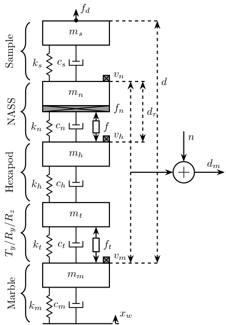
4.4 Uni-axial Model - Active Damping
\begin{tikzpicture} % ==================== % Parameters % ==================== \def\massw{2.2} % Width of the masses \def\massh{0.8} % Height of the masses \def\spaceh{1.2} % Height of the springs/dampers \def\dispw{0.4} % Width of the dashed line for the displacement \def\disph{0.3} % Height of the arrow for the displacements \def\bracs{0.05} % Brace spacing vertically \def\brach{-12pt} % Brace shift horizontaly \def\fsensh{0.2} % Height of the force sensor \def\velsize{0.2} % Size of the velocity sensor % ==================== \begin{scope} % ==================== % Ground % ==================== \draw (-0.5*\massw, 0) -- (0.5*\massw, 0); % \node[ground={\massw}{0.1*\massw}] at (0, 0) {}; \draw[dashed] (0.5*\massw, 0) -- ++(\dispw, 0); \draw[->] (0.5*\massw+0.5*\dispw, 0) -- ++(0, \disph) node[right]{$x_{w}$}; % ==================== % ==================== % Granite \begin{scope}[shift={(0, 0)}] % Mass \draw[fill=white] (-0.5*\massw, \spaceh) rectangle (0.5*\massw, \spaceh+\massh) node[pos=0.5]{$m_m$}; % Velocity Sensor \node[inertialsensor={\velsize}] (velg) at (0.5*\massw, \spaceh+\massh){}; \node[right] at (velg.north east) {$v_g$}; % Spring, Damper, and Actuator \draw[spring] (-0.4*\massw, 0) -- (-0.4*\massw, \spaceh) node[midway, left=0.1]{$k_m$}; \draw[damper] (0, 0) -- ( 0, \spaceh) node[midway, left=0.2]{$c_m$}; \end{scope} % ==================== % ==================== % Stages \begin{scope}[shift={(0, \spaceh+\massh)}] % Mass \draw[fill=white] (-0.5*\massw, \spaceh) rectangle (0.5*\massw, \spaceh+\massh) node[pos=0.5]{$m_{t}$}; % Spring, Damper, and Actuator \draw[spring] (-0.4*\massw, 0) -- (-0.4*\massw, \spaceh) node[midway, left=0.1]{$k_{t}$}; \draw[damper] (0, 0) -- ( 0, \spaceh) node[midway, left=0.2]{$c_{t}$}; \draw[actuator={0.45}{0.2}] ( 0.3*\massw, 0) -- ( 0.3*\massw, \spaceh) node[midway, right=0.1](ft){$f_t$}; \end{scope} % ==================== % ==================== % Hexapod \begin{scope}[shift={(0, 2*(\spaceh+\massh))}] % Mass \draw[fill=white] (-0.5*\massw, \spaceh) rectangle (0.5*\massw, \spaceh+\massh) node[pos=0.5]{$m_h$}; % Velocity Sensor \node[inertialsensor={\velsize}] (velm) at (0.5*\massw, \spaceh+\massh){}; \node[right] at (velm.north east) {$v_{m}$}; % Spring, Damper, and Actuator \draw[spring] (-0.4*\massw, 0) -- (-0.4*\massw, \spaceh) node[midway, left=0.1]{$k_h$}; \draw[damper] (0, 0) -- ( 0, \spaceh) node[midway, left=0.2]{$c_h$}; \end{scope} % ==================== % ==================== % NASS \begin{scope}[shift={(0, 3*(\spaceh+\massh))}] % Mass \draw[fill=white] (-0.5*\massw, \spaceh) rectangle (0.5*\massw, \spaceh+\massh) node[pos=0.5]{$m_{n}+m_{s}$}; % External Force \draw[->] (0, \spaceh+\massh) node[]{$\bullet$} -- ++(0, 0.5*\massh) node[right]{$f_d$}; % Force Sensor \node[forcesensor={\massw}{\fsensh}] (fsensn) at (0, \spaceh-\fsensh){}; \node[right] (fn) at (fsensn.east) {$f_n$}; % Velocity Sensor \node[inertialsensor={\velsize}] (veln) at (0.5*\massw, \spaceh+\massh) {}; \node[right] (xn) at (veln.north east) {$v_n$}; % Spring, Damper, and Actuator \draw[spring] (-0.4*\massw, 0) -- (-0.4*\massw, \spaceh-\fsensh) node[midway, left=0.1]{$k_{n}$}; \draw[damper] (0, 0) -- ( 0, \spaceh-\fsensh) node[midway, left=0.2]{$c_{n}$}; \draw[actuator={0.4}{0.2}] ( 0.3*\massw, 0) -- ( 0.3*\massw, \spaceh-\fsensh) node[midway, right=0.1](f){$f$}; \end{scope} % ==================== % ==================== % DVF Control \node[block={2em}{2em}, below right=0.4 and 0.1 of xn] (ppf) {$K_{\text{DVF}}$}; \draw[->] (xn.east) -| (ppf.north); \draw[->] (ppf.south) |- (f.east); % ==================== \end{scope} \begin{scope}[shift={(5,0)}] % ==================== % Ground % ==================== \draw (-0.5*\massw, 0) -- (0.5*\massw, 0); % \node[ground={\massw}{0.1*\massw}] at (0, 0) {}; \draw[dashed] (0.5*\massw, 0) -- ++(\dispw, 0); \draw[->] (0.5*\massw+0.5*\dispw, 0) -- ++(0, \disph) node[right]{$x_{w}$}; % ==================== % ==================== % Granite \begin{scope}[shift={(0, 0)}] % Mass \draw[fill=white] (-0.5*\massw, \spaceh) rectangle (0.5*\massw, \spaceh+\massh) node[pos=0.5]{$m_m$}; % Velocity Sensor \node[inertialsensor={\velsize}] (velg) at (0.5*\massw, \spaceh+\massh){}; \node[right] at (velg.north east) {$v_g$}; % Spring, Damper, and Actuator \draw[spring] (-0.4*\massw, 0) -- (-0.4*\massw, \spaceh) node[midway, left=0.1]{$k_m$}; \draw[damper] (0, 0) -- ( 0, \spaceh) node[midway, left=0.2]{$c_m$}; \end{scope} % ==================== % ==================== % Stages \begin{scope}[shift={(0, \spaceh+\massh)}] % Mass \draw[fill=white] (-0.5*\massw, \spaceh) rectangle (0.5*\massw, \spaceh+\massh) node[pos=0.5]{$m_{t}$}; % Spring, Damper, and Actuator \draw[spring] (-0.4*\massw, 0) -- (-0.4*\massw, \spaceh) node[midway, left=0.1]{$k_{t}$}; \draw[damper] (0, 0) -- ( 0, \spaceh) node[midway, left=0.2]{$c_{t}$}; \draw[actuator={0.45}{0.2}] ( 0.3*\massw, 0) -- ( 0.3*\massw, \spaceh) node[midway, right=0.1](ft){$f_t$}; \end{scope} % ==================== % ==================== % Hexapod \begin{scope}[shift={(0, 2*(\spaceh+\massh))}] % Mass \draw[fill=white] (-0.5*\massw, \spaceh) rectangle (0.5*\massw, \spaceh+\massh) node[pos=0.5]{$m_h$}; % Velocity Sensor \node[inertialsensor={\velsize}] (velm) at (0.5*\massw, \spaceh+\massh){}; \node[right] at (velm.north east) {$v_{m}$}; % Spring, Damper, and Actuator \draw[spring] (-0.4*\massw, 0) -- (-0.4*\massw, \spaceh) node[midway, left=0.1]{$k_h$}; \draw[damper] (0, 0) -- ( 0, \spaceh) node[midway, left=0.2]{$c_h$}; \end{scope} % ==================== % ==================== % NASS \begin{scope}[shift={(0, 3*(\spaceh+\massh))}] % Mass \draw[fill=white] (-0.5*\massw, \spaceh) rectangle (0.5*\massw, \spaceh+\massh) node[pos=0.5]{$m_{n}+m_{s}$}; % External Force \draw[->] (0, \spaceh+\massh) node[]{$\bullet$} -- ++(0, 0.5*\massh) node[right]{$f_d$}; % Force Sensor \node[forcesensor={\massw}{\fsensh}] (fsensn) at (0, \spaceh-\fsensh){}; \node[right] (fn) at (fsensn.east) {$f_n$}; % Velocity Sensor \node[inertialsensor={\velsize}] (veln) at (0.5*\massw, \spaceh+\massh) {}; \node[right] (xn) at (veln.north east) {$v_n$}; % Spring, Damper, and Actuator \draw[spring] (-0.4*\massw, 0) -- (-0.4*\massw, \spaceh-\fsensh) node[midway, left=0.1]{$k_{n}$}; \draw[damper] (0, 0) -- ( 0, \spaceh-\fsensh) node[midway, left=0.2]{$c_{n}$}; \draw[actuator={0.4}{0.2}] ( 0.3*\massw, 0) -- ( 0.3*\massw, \spaceh-\fsensh) node[midway, right=0.1](f){$f$}; \end{scope} % ==================== % ==================== % IFF Control \node[block={2em}{2em}, right=0.3 of fn] (iff) {$K_{\text{IFF}}$}; \draw[->] (fn.east) -- (iff.west); \draw[->] (iff.south) |- (f.east); % ==================== \end{scope} \begin{scope}[shift={(10,0)}] % ==================== % Ground % ==================== \draw (-0.5*\massw, 0) -- (0.5*\massw, 0); % \node[ground={\massw}{0.1*\massw}] at (0, 0) {}; \draw[dashed] (0.5*\massw, 0) -- ++(\dispw, 0); \draw[->] (0.5*\massw+0.5*\dispw, 0) -- ++(0, \disph) node[right]{$x_{w}$}; % ==================== % ==================== % Granite \begin{scope}[shift={(0, 0)}] % Mass \draw[fill=white] (-0.5*\massw, \spaceh) rectangle (0.5*\massw, \spaceh+\massh) node[pos=0.5]{$m_m$}; % Velocity Sensor \node[inertialsensor={\velsize}] (velg) at (0.5*\massw, \spaceh+\massh){}; \node[right] at (velg.north east) {$v_g$}; % Spring, Damper, and Actuator \draw[spring] (-0.4*\massw, 0) -- (-0.4*\massw, \spaceh) node[midway, left=0.1]{$k_m$}; \draw[damper] (0, 0) -- ( 0, \spaceh) node[midway, left=0.2]{$c_m$}; \end{scope} % ==================== % ==================== % Stages \begin{scope}[shift={(0, \spaceh+\massh)}] % Mass \draw[fill=white] (-0.5*\massw, \spaceh) rectangle (0.5*\massw, \spaceh+\massh) node[pos=0.5]{$m_{t}$}; % Spring, Damper, and Actuator \draw[spring] (-0.4*\massw, 0) -- (-0.4*\massw, \spaceh) node[midway, left=0.1]{$k_{t}$}; \draw[damper] (0, 0) -- ( 0, \spaceh) node[midway, left=0.2]{$c_{t}$}; \draw[actuator={0.45}{0.2}] ( 0.3*\massw, 0) -- ( 0.3*\massw, \spaceh) node[midway, right=0.1](ft){$f_t$}; \end{scope} % ==================== % ==================== % Hexapod \begin{scope}[shift={(0, 2*(\spaceh+\massh))}] % Mass \draw[fill=white] (-0.5*\massw, \spaceh) rectangle (0.5*\massw, \spaceh+\massh) node[pos=0.5]{$m_h$}; % Velocity Sensor \node[inertialsensor={\velsize}] (velm) at (0.5*\massw, \spaceh+\massh){}; \node[right] at (velm.north east) {$v_{m}$}; % Spring, Damper, and Actuator \draw[spring] (-0.4*\massw, 0) -- (-0.4*\massw, \spaceh) node[midway, left=0.1]{$k_h$}; \draw[damper] (0, 0) -- ( 0, \spaceh) node[midway, left=0.2]{$c_h$}; \draw[dashed] (0.5*\massw, \spaceh+\massh) -- ++(2*\dispw, 0) coordinate(drbot); \end{scope} % ==================== % ==================== % NASS \begin{scope}[shift={(0, 3*(\spaceh+\massh))}] % Mass \draw[fill=white] (-0.5*\massw, \spaceh) rectangle (0.5*\massw, \spaceh+\massh) node[pos=0.5]{$m_{n}+m_{s}$}; % External Force \draw[->] (0, \spaceh+\massh) node[]{$\bullet$} -- ++(0, 0.5*\massh) node[right]{$f_d$}; % Force Sensor \node[forcesensor={\massw}{\fsensh}] (fsensn) at (0, \spaceh-\fsensh){}; \node[right] (fn) at (fsensn.east) {$f_n$}; % Velocity Sensor \node[inertialsensor={\velsize}] (veln) at (0.5*\massw, \spaceh+\massh) {}; \node[right] (xn) at (veln.north east) {$v_n$}; % Spring, Damper, and Actuator \draw[spring] (-0.4*\massw, 0) -- (-0.4*\massw, \spaceh-\fsensh) node[midway, left=0.1]{$k_{n}$}; \draw[damper] (0, 0) -- ( 0, \spaceh-\fsensh) node[midway, left=0.2]{$c_{n}$}; \draw[actuator={0.4}{0.2}] ( 0.3*\massw, 0) -- ( 0.3*\massw, \spaceh-\fsensh) node[midway, right=0.1](f){$f$}; \draw[dashed] (0.5*\massw, \spaceh+\massh) -- ++(2*\dispw, 0) coordinate(drtop); \end{scope} % ==================== \draw[<->, dashed] ($(drbot)+(-0.1, 0)$) -- ($(drtop)+(-0.1, 0)$) node[right](dr){$d_r$}; % ==================== % RMC Control \node[block={2em}{2em}, below right=0.2 and 0.2 of dr] (rmc) {$K_{\text{RMC}}$}; \draw[->] (dr.east) -| (rmc.north); \draw[->] (rmc.south) |- (f.east); % ==================== \end{scope} \end{tikzpicture}
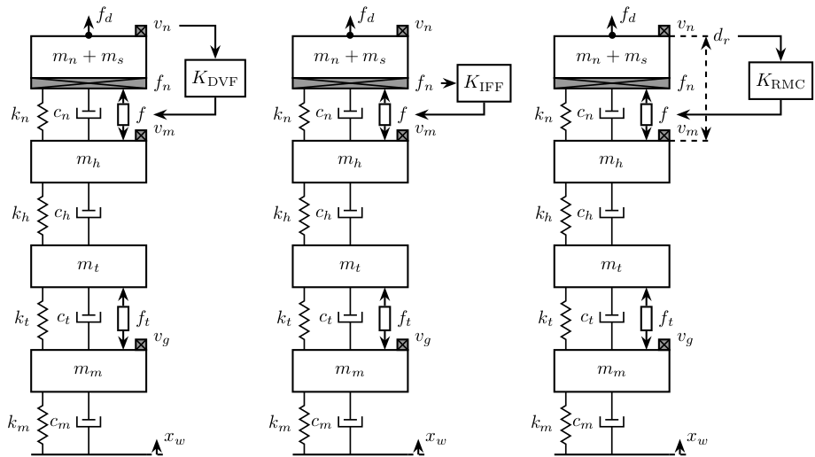
4.5 Uni-axial Model - HAC-LAC
\begin{tikzpicture} % ==================== % Parameters % ==================== \def\massw{2.2} % Width of the masses \def\massh{0.8} % Height of the masses \def\spaceh{1.2} % Height of the springs/dampers \def\dispw{1.2} % Width of the dashed line for the displacement \def\disph{0.3} % Height of the arrow for the displacements \def\bracs{0.05} % Brace spacing vertically \def\brach{-12pt} % Brace shift horizontaly \def\fsensh{0.2} % Height of the force sensor \def\velsize{0.2} % Size of the velocity sensor % ==================== % ==================== % Ground % ==================== \draw (-0.5*\massw, 0) -- (0.5*\massw, 0); % \node[ground={\massw}{0.1*\massw}] at (0, 0) {}; \draw[dashed] (0.5*\massw, 0) -- ++(\dispw, 0); \draw[->] (0.5*\massw+0.5*\dispw, 0) -- ++(0, \disph) node[right]{$x_{w}$}; % ==================== % ==================== % Granite \begin{scope}[shift={(0, 0)}] % Mass \draw[fill=white] (-0.5*\massw, \spaceh) rectangle (0.5*\massw, \spaceh+\massh) node[pos=0.5]{$m_{g}$}; % Velocity Sensor \node[inertialsensor={\velsize}] (velg) at (0.5*\massw, \spaceh+\massh){}; \node[right] at (velg.north east) {$x_g$}; % Spring, Damper, and Actuator \draw[spring] (-0.4*\massw, 0) -- (-0.4*\massw, \spaceh) node[midway, left=0.1]{$k_{g}$}; \draw[damper] (0, 0) -- ( 0, \spaceh) node[midway, left=0.2]{$c_{g}$}; % Displacements \draw[dashed] (0.5*\massw, \spaceh+\massh) -- ++(2*\dispw, 0) coordinate(xg); % \draw[->] (0.5*\massw+0.5*\dispw, \spaceh) -- ++(0, \disph) node[right]{$x_{g}$}; % Legend % \draw[decorate, decoration={brace, amplitude=8pt}, xshift=\brach] % % (-0.5*\massw, \bracs) -- (-0.5*\massw, \spaceh+\massh-\bracs) node[midway,rotate=90,anchor=south,yshift=10pt]{Granite}; \end{scope} % ==================== % ==================== % Stages \begin{scope}[shift={(0, \spaceh+\massh)}] % Mass \draw[fill=white] (-0.5*\massw, \spaceh) rectangle (0.5*\massw, \spaceh+\massh) node[pos=0.5]{$m_{t}$}; % Spring, Damper, and Actuator \draw[spring] (-0.4*\massw, 0) -- (-0.4*\massw, \spaceh) node[midway, left=0.1]{$k_{t}$}; \draw[damper] (0, 0) -- ( 0, \spaceh) node[midway, left=0.2]{$c_{t}$}; \draw[actuator] ( 0.3*\massw, 0) -- ( 0.3*\massw, \spaceh) node[midway, right=0.1](ft){$f_t$}; % Displacements % \draw[dashed] (0.5*\massw, \spaceh) -- ++(\dispw, 0); % \draw[->] (0.5*\massw+0.5*\dispw, \spaceh) -- ++(0, \disph) node[right]{$x_{t}$}; % Legend % \draw[decorate, decoration={brace, amplitude=8pt}, xshift=\brach] % % (-0.5*\massw, \bracs) -- (-0.5*\massw, \spaceh+\massh-\bracs) node[midway,rotate=90,anchor=south,yshift=10pt]{$T_y$/$R_y$/$R_z$}; \end{scope} % ==================== % ==================== % Hexapod \begin{scope}[shift={(0, 2*(\spaceh+\massh))}] % Mass \draw[fill=white] (-0.5*\massw, \spaceh) rectangle (0.5*\massw, \spaceh+\massh) node[pos=0.5]{$m_{m}$}; % Velocity Sensor \node[inertialsensor={\velsize}] (velm) at (0.5*\massw, \spaceh+\massh){}; \node[right] at (velm.north east) {$x_m$}; % Spring, Damper, and Actuator \draw[spring] (-0.4*\massw, 0) -- (-0.4*\massw, \spaceh) node[midway, left=0.1]{$k_{m}$}; \draw[damper] (0, 0) -- ( 0, \spaceh) node[midway, left=0.2]{$c_{m}$}; % \draw[actuator] ( 0.4*\massw, 0) -- ( 0.4*\massw, \spaceh) node[midway, right=0.1](F){$F$}; % Displacements % \draw[dashed] (0.5*\massw, \spaceh) -- ++(\dispw, 0); % \draw[->] (0.5*\massw+0.5*\dispw, \spaceh) -- ++(0, \disph) node[right]{$x_{m}$}; % Legend % \draw[decorate, decoration={brace, amplitude=8pt}, xshift=\brach] % % (-0.5*\massw, \bracs) -- (-0.5*\massw, \spaceh+\massh-\bracs) node[midway,rotate=90,anchor=south,yshift=10pt]{Hexapod}; \end{scope} % ==================== % ==================== % NASS \begin{scope}[shift={(0, 3*(\spaceh+\massh))}] % Mass \draw[fill=white] (-0.5*\massw, \spaceh) rectangle (0.5*\massw, \spaceh+\massh) node[pos=0.5]{$m_{n}+m_{s}$}; % External Force \draw[->] (0, \spaceh+\massh) node[]{$\bullet$} -- ++(0, 0.5*\massh) node[right]{$f_i$}; % Force Sensor \node[forcesensor={\massw}{\fsensh}] (fsensn) at (0, \spaceh-\fsensh){}; \node[right] (fn) at (fsensn.east) {$f_n$}; % Velocity Sensor \node[inertialsensor={\velsize}] (veln) at (0.5*\massw, \spaceh+\massh) {}; \node[right] (xn) at (veln.north east) {$x_n$}; % Spring, Damper, and Actuator \draw[spring] (-0.4*\massw, 0) -- (-0.4*\massw, \spaceh-\fsensh) node[midway, left=0.1]{$k_{n}$}; \draw[damper] (0, 0) -- ( 0, \spaceh-\fsensh) node[midway, left=0.2]{$c_{n}$}; \draw[actuator] ( 0.3*\massw, 0) -- ( 0.3*\massw, \spaceh-\fsensh) node[midway, right=0.1](f){$f$}; % Displacements \draw[dashed] (0.5*\massw, \spaceh+\massh) -- ++(2*\dispw, 0) coordinate(xnpos); % \draw[->] (0.5*\massw+0.5*\dispw, \spaceh) -- ++(0, \disph) node[right]{$x_{n}$}; % Legend % \draw[decorate, decoration={brace, amplitude=8pt}, xshift=\brach] % % (-0.5*\massw, \bracs) -- (-0.5*\massw, \spaceh+\massh-\bracs) node[midway,rotate=90,anchor=south,yshift=10pt]{NASS}; \end{scope} % ==================== % ==================== % Measured Displacement \draw[<->, dashed] ($(xg)+(-0.1, 0)$) -- node[left](d){$d$} ($(xnpos)+(-0.1, 0)$); % ==================== % ==================== % DVF Control % \node[block={2em}{1.5em}, below right=0.4 and 0.1 of xn] (ppf) {$K$}; % \draw[->] (xn.east) -| (ppf.north); % \draw[->] (ppf.south) |- (f.east); % ==================== % ==================== % IFF Control \node[block={2em}{1.5em}, right=0.8 of fn] (iff) {$g\frac{1}{s}$}; \node[addb, right=0.5 of f.east] (ctrladd) {}; \node[block={2em}{1.5em}] (ctrl) at (ctrladd|-d) {$K$}; \draw[->] (fn.east) -- (iff.west); \draw[->] (iff.south) |- (ctrladd.east); \draw[->] (ctrladd.west) -- (f.east); \draw[->] (d.west) -- (ctrl.east); \draw[->] (ctrl.north) -- (ctrladd.south); % ==================== \end{tikzpicture}
5 Measurements
5.1 Geophone Measurements
\begin{tikzpicture} % Parameters \def\blockw{6.0cm} \def\blockh{1.2cm} \def\tiltdeg{0} \coordinate[] (rotationpoint) at (0, 4.5*\blockh); \begin{scope}[rotate around={\tiltdeg:(rotationpoint)}] % Tilt \path[] ([shift=(-120:4*\blockh)]rotationpoint) coordinate(beginarc) arc (-120:-110:4*\blockh) % -- ([shift=(-70:4*\blockh)]rotationpoint) arc (-70:-60:4*\blockh)% |- ++(-0.15*\blockw, 0.6*\blockh) coordinate (spindlene)% |- ($(beginarc) + (0.15*\blockw, 0.2*\blockh)$) coordinate (spindlesw) -- ++(0, 0.4*\blockh) coordinate(tiltte) -| cycle; % Spindle \coordinate[] (spindlese) at (spindlesw-|spindlene); \draw[fill=black!30] ($(spindlese)+(-0.1,0.1)+(-0.1*\blockw, 0)$) -| ($(spindlene)+(-0.1, 0)$) -| coordinate[pos=0.25](spindletop) ($(spindlesw)+(0.1,0.1)$) -| ++(0.1*\blockw, -\blockh) -| coordinate[pos=0.25](spindlebot) cycle; % \draw[dashed, color=black!60] ($(spindletop)+(0, 0.2)$) -- ($(spindlebot)+(0,-0.2)$); % Tilt \draw[fill=black!60] ([shift=(-120:4*\blockh)]rotationpoint) coordinate(beginarc) arc (-120:-110:4*\blockh) % -- ([shift=(-70:4*\blockh)]rotationpoint) arc (-70:-60:4*\blockh)% |- coordinate (tiltne) ++(-0.15*\blockw, 0.6*\blockh) coordinate (spindlene)% |- ($(beginarc) + (0.15*\blockw, 0.2*\blockh)$) coordinate (spindlesw) -- ++(0, 0.4*\blockh) -| cycle; % Micro-Hexapod \begin{scope}[shift={(spindletop)}] % Parameters definitions \def\baseh{0.22*\blockh} % Height of the base \def\naceh{0.18*\blockh} % Height of the nacelle \def\baser{0.22*\blockw} % Radius of the base \def\nacer{0.18*\blockw} % Radius of the nacelle \def\armr{0.2*\blockh} % Radius of the arms \def\basearmborder{0.2} \def\nacearmborder{0.2} \def\xnace{0} \def\ynace{\blockh-\naceh} \def\anace{0} \def\xbase{0} \def\ybase{0} \def\abase{0} % Hexapod1 \begin{scope}[shift={(\xbase, \ybase)}, rotate=\abase] % Base \draw[fill=white] (-\baser, 0) coordinate[](uhexabot) rectangle (\baser, \baseh); \coordinate[] (armbasel) at (-\baser+\basearmborder+\armr, \baseh); \coordinate[] (armbasec) at (0, \baseh); \coordinate[] (armbaser) at (\baser-\basearmborder-\armr, \baseh); \begin{scope}[shift={(\xnace, \ynace)}, rotate=\anace] \draw[fill=white] (-\nacer, 0) rectangle (\nacer, \naceh); \coordinate[] (uhexatop) at (0, \naceh); \coordinate[] (armnacel) at (-\nacer+\nacearmborder+\armr, 0); \coordinate[] (armnacec) at (0, 0); \coordinate[] (armnacer) at (\nacer-\nacearmborder-\armr, 0); \end{scope} \draw[] (armbasec) -- (armnacer); \draw[] (armbasec) -- (armnacel); \draw[] (armbasel) -- coordinate(mhexaw) (armnacel); \draw[] (armbasel) -- (armnacec); \draw[] (armbaser) -- (armnacec); \draw[] (armbaser) -- coordinate(mhexae) (armnacer); \end{scope} \end{scope} \begin{scope}[shift={(uhexatop)}] \draw[fill=white, rounded corners=0.1] (-0.5, 0.2) -- ++(0, -0.1) -- ++(0.1, -0.1) -- ++(0.1, 0.1) -- ++(0, 0.1) --cycle; \draw[fill=white, rounded corners=0.1] ( 0.3, 0.2) -- ++(0, -0.1) -- ++(0.1, -0.1) -- ++(0.1, 0.1) -- ++(0, 0.1) --cycle; \draw[fill=white] (0.6, 0.4) rectangle ++(0.2, 0.2); \node[fill,shape=circle,minimum size=3pt,inner sep=0pt] at (0.8, 0.5){}; \draw[out=0] (0.8, 0.5) to ++(0.2, -0.1); \draw[fill=white] (-0.6, 0.2) rectangle node[midway]{\tiny geophone} (0.6, 0.8); \end{scope} \end{scope} \begin{scope}[shift={(0, -0.3*\blockh)}] % Translation Stage - fixed part \draw[fill=black!40] (-0.5*\blockw, 0) coordinate[](tyb) rectangle (0.5*\blockw, 0.15*\blockh); \coordinate[] (measposbot) at (0.5*\blockw, 0); % Translation Stage - mobile part \draw[fill=black!10, fill opacity=0.5] (-0.5*\blockw, 0.2*\blockh) -- (-0.5*\blockw, 1.5*\blockh) coordinate[](tyt) -- (0.5*\blockw, 1.5*\blockh) -- (0.5*\blockw, 0.2*\blockh) -- (0.35*\blockw, 0.2*\blockh) -- (0.35*\blockw, 0.8*\blockh) -- (-0.35*\blockw, 0.8*\blockh) -- (-0.35*\blockw, 0.2*\blockh) -- cycle; % Translation Guidance \draw[dashed, color=black!60] ($(-0.5*\blockw, 0)+( 0.075*\blockw,0.5*\blockh)$) circle (0.2*\blockh); \draw[dashed, color=black!60] ($( 0.5*\blockw, 0)+(-0.075*\blockw,0.5*\blockh)$) circle (0.2*\blockh); \draw[fill, color=black] ($( 0.5*\blockw, 0)+(-0.075*\blockw,0.5*\blockh)$) circle (0.04); \node[draw, circle, inner sep=0pt, minimum size=0.3cm, label=above:$T_y$] at ($( 0.5*\blockw, 0)+(-0.075*\blockw,0.5*\blockh)$){}; % Tilt Guidance \draw[dashed, color=black!60] ([shift=(-107:4.1*\blockh)]rotationpoint) arc (-107:-120:4.1*\blockh); \draw[dashed, color=black!60] ([shift=( -73:4.1*\blockh)]rotationpoint) arc (-73:-60:4.1*\blockh); \begin{scope}[shift={(4.0, 0)}] \draw[fill=white, rounded corners=0.1] (-0.5, 0.2) -- ++(0, -0.1) -- ++(0.1, -0.1) -- ++(0.1, 0.1) -- ++(0, 0.1) --cycle; \draw[fill=white, rounded corners=0.1] ( 0.3, 0.2) -- ++(0, -0.1) -- ++(0.1, -0.1) -- ++(0.1, 0.1) -- ++(0, 0.1) --cycle; \draw[fill=white] (0.6, 0.4) rectangle ++(0.2, 0.2); \node[fill,shape=circle,minimum size=3pt,inner sep=0pt] at (0.8, 0.5){}; \draw[out=0] (0.8, 0.5) to ++(0.2, -0.1); \draw[fill=white] (-0.6, 0.2) rectangle node[midway]{\tiny geophone} (0.6, 0.8); \end{scope} \end{scope} % Vertical line \draw[dashed, color=black] (spindlebot) -- ++(0, 2*\blockh); \node[] at ($(spindlebot)+(0, 1.1*\blockh)$) {\AxisRotator[rotate=-90]}; \node[right, shift={(0.3,0)}] at ($(spindlebot)+(0, 1.1*\blockh)$) {$\theta_z$}; % Axis \begin{scope}[shift={(-0.35*\blockw, 3*\blockh)}] \def\axissize{0.8cm} \draw[->] (0, 0) -- ++(0, \axissize) node[right]{$z$}; \draw[->] (0, 0) -- ++(-\axissize, 0) node[above]{$x$}; \draw[fill, color=black] (0, 0) circle (0.05*\axissize); \node[draw, circle, inner sep=0pt, minimum size=0.4*\axissize, label=right:$y$] (yaxis) at (0, 0){}; \end{scope} \end{tikzpicture}
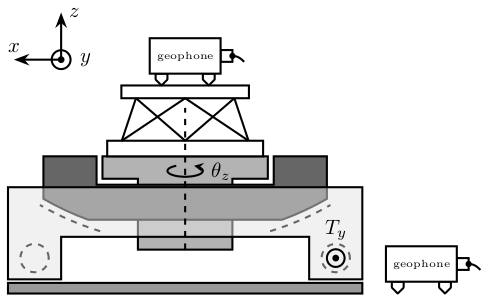
6 Setup
6.1 Schematic Setup
\tikzstyle{cin} = [font=\small, color=blue!40!black, below left] \tikzstyle{cout} = [font=\small, color=blue!40!black, above left] % Block Large \tikzstyle{bk} = [draw, fill=white, minimum width=#1*\bkw, minimum height=\bkh, text width=#1*\bkw] % Block Above \tikzstyle{bka} = [above=\spacing of #1] % Block Above left \tikzstyle{bkal} = [above=\spacing of #1.north west, anchor=south west] % Block Above right \tikzstyle{bkar} = [above=\spacing of #1.north east, anchor=south east] % Block right \tikzstyle{bkr} = [right=0.5*\spacing of #1] % Block Label \tikzstyle{bklb} = [label={[anchor=north]\textbf{#1}}] \begin{tikzpicture} % Parameters \def\spacing{1.5} \def\bkw{2.5cm} \def\bkh{2cm} \node[bk=5, bklb=PC] (PC) at (0, 0) {}; \node[bk=5, bka=PC, bklb=SpeedGoat] (speedgoat) {}; \node[bk=5, bka=speedgoat, bklb=SpeedGoat ESRF Interface] (sgint) {Interface with SUBD15 connections}; \node[bk=1.4, bkal=sgint, bklb=PEPU] (pepu) {6 SUBD15(f)\\2 SUBD15(m)}; \node[bk=1.4, bka=sgint, bklb=SSI2V] (ssi2v) {DAC 20 bits\\$\pm 10V$}; \node[bk=1.4, bkar=sgint, bklb=V2SSI] (v2ssi) {ADC 18 bits\\$\pm 10V$}; \node[bk=1.4, bka=ssi2v, bklb=APA100M] (apa) {}; \node[bk=1.4, bka=pepu, bklb=Attocube] (attocube) {Interferometer}; % Connections \draw[] (attocube.south) -- node[right]{HSSL} (pepu.north) node[cout]{SUBD15}; \draw[] (pepu.south) node[cin]{SUBD15} -- node[right]{SSI} (pepu|-sgint.north) node[cout]{SUBD15}; \draw[] (apa.south) node[cin]{BNC} -- node[right]{Analog} (ssi2v.north) node[cout]{BNC}; \draw[] (apa.east) node[cin]{BNC} -| node[right]{Analog} (v2ssi.north) node[cout]{BNC}; \draw[] (ssi2v.south) node[cin]{SUBD25} -- node[right]{SSI} (ssi2v|-sgint.north) node[cout]{SUBD15}; \draw[] (v2ssi.south) node[cin]{SUBD15} -- node[right]{SSI} (v2ssi|-sgint.north) node[cout]{SUBD15}; \draw[] (sgint.south) -- (speedgoat.north); \draw[] (speedgoat.south) -- node[right]{Ethernet} (PC.north); \end{tikzpicture}

6.2 Modal Measurement Setup
\newcommand\axisdef[6][]{ \begin{scope}[#5, shift={(#1)}] \def\axissize{0.8cm} \draw[->] (0, 0) -- ++(-\axissize, 0) node[above right]{$#2$}; \draw[->] (0, 0) -- ++(0, -\axissize) node[above left]{$#3$}; \draw[fill, color=black] (0, 0) circle (0.05*\axissize); \node[draw, circle, inner sep=0pt, minimum size=0.4*\axissize, label=right:$#4$, #6] (yaxis) at (0, 0){}; \end{scope} } \begin{tikzpicture} \node[draw, fill=blue!20!white, minimum width=14cm, minimum height=12cm] (granite_bot) at (0, 0) {}; \node[draw, fill=green!20!white, minimum width=12cm, minimum height=10cm] (granite_top) at (0, 0) {}; \node[draw, fill=red!20!white, minimum width=10cm, minimum height=8cm] (ty) at (0, 0) {}; \node[draw, fill=black!20!white, minimum width=8cm, minimum height=6cm] (ry) at (0, 0) {}; \node[draw, fill=orange!20!white, circle, minimum size=5.5cm] (rz) at (0, 0) {}; \node[draw, fill=yellow!20!white, circle, minimum size=3cm] (hexa) at (0, 0) {}; % Bottom Granite \node[below] at (granite_bot.north){Bottom Granite}; \node[above right] (17) at (granite_bot.south west){$\bullet$}; \node[below right] (18) at (granite_bot.north west){$\bullet$}; \node[below left] (19) at (granite_bot.north east){$\bullet$}; \node[above left] (20) at (granite_bot.south east){$\bullet$}; \node[above right] at (17) {$17$}; \node[above right] at (18) {$18$}; \node[above right] at (19) {$19$}; \node[above right] at (20) {$20$}; \axisdef[17]{x}{y}{z}{}{}; \axisdef[18]{x}{y}{z}{}{}; \axisdef[19]{x}{y}{z}{}{}; \axisdef[20]{x}{y}{z}{}{}; % Top Granite \node[below] at (granite_top.north){Top Granite}; \node[above right] (13) at (granite_top.south west){$\bullet$}; \node[below right] (14) at (granite_top.north west){$\bullet$}; \node[below left] (15) at (granite_top.north east){$\bullet$}; \node[above left] (16) at (granite_top.south east){$\bullet$}; \node[above right] at (13) {$13$}; \node[above right] at (14) {$14$}; \node[above right] at (15) {$15$}; \node[above right] at (16) {$16$}; \axisdef[13]{x}{y}{z}{}{}; \axisdef[14]{x}{y}{z}{}{}; \axisdef[15]{x}{y}{z}{}{}; \axisdef[16]{x}{y}{z}{}{}; % Translation Stage \node[below] at (ty.north){Ty}; \node[above right] (9) at (ty.south west){$\bullet$}; \node[below right] (10) at (ty.north west){$\bullet$}; \node[below left] (11) at (ty.north east){$\bullet$}; \node[above left] (12) at (ty.south east){$\bullet$}; \node[above right] at (9) {$9$}; \node[above right] at (10) {$10$}; \node[above right] at (11) {$11$}; \node[above right] at (12) {$12$}; \axisdef[ 9]{x}{y}{z}{}{}; \axisdef[10]{x}{y}{z}{}{}; \axisdef[11]{x}{y}{z}{}{}; \axisdef[12]{x}{y}{z}{}{}; % Tilt Stage \node[below] at ($0.8*(ry.north west)+0.2*(ry.north east)$){Ry}; \node[above right] (5) at (ry.south west){$\bullet$}; \node[below right] (6) at (ry.north west){$\bullet$}; \node[below left] (7) at (ry.north east){$\bullet$}; \node[above left] (8) at (ry.south east){$\bullet$}; \node[above right] at (5) {$5$}; \node[above right] at (6) {$6$}; \node[above right] at (7) {$7$}; \node[above right] at (8) {$8$}; \axisdef[5]{x}{y}{z}{}{}; \axisdef[6]{x}{y}{z}{}{}; \axisdef[7]{x}{y}{z}{}{}; \axisdef[8]{x}{y}{z}{}{}; % Spindle \node[below] at (135:2.5cm){Rz}; \node[] (21) at (210:2.5cm){$\bullet$}; \node[] (22) at ( 90:2.5cm){$\bullet$}; \node[] (23) at (-30:2.5cm){$\bullet$}; \node[above right] at (21) {$21$}; \node[above right] at (22) {$22$}; \node[above right] at (23) {$23$}; \axisdef[21]{x}{y}{z}{}{}; \axisdef[22]{x}{y}{z}{}{}; \begin{scope}[shift={(23)}] \def\axissize{0.8cm} \draw[->] (0, 0) -- ++(-\axissize, 0) node[above right]{$x$}; \draw[->] (0, 0) -- ++(0, \axissize) node[below right]{$z$}; \draw[fill, color=black] (0, 0) circle (0.05*\axissize); \node[draw, circle, inner sep=0pt, minimum size=0.4*\axissize, label=below:$y$] (yaxis) at (0, 0){}; \end{scope} % Hexapod \node[] at (0, 0){Hexa}; \node[] (1) at (225:1.2cm){$\bullet$}; \node[] (2) at (135:1.2cm){$\bullet$}; \node[] (3) at ( 45:1.2cm){$\bullet$}; \node[] (4) at (-45:1.2cm){$\bullet$}; \node[above right] at (1) {$1$}; \node[above right] at (2) {$2$}; \node[above right] at (3) {$3$}; \node[above right] at (4) {$4$}; \axisdef[1]{x}{y}{z}{}{}; \axisdef[2]{x}{y}{z}{}{}; \axisdef[4]{x}{y}{z}{}{}; \begin{scope}[shift={(3)}] \def\axissize{0.8cm} \draw[->] (0, 0) -- ++(\axissize, 0) node[above left]{$y$}; \draw[->] (0, 0) -- ++(0, -\axissize) node[above right]{$x$}; \draw[fill, color=black] (0, 0) circle (0.05*\axissize); \node[draw, circle, inner sep=0pt, minimum size=0.4*\axissize, label=left:$z$] (yaxis) at (0, 0){}; \end{scope} % Global Axis \begin{scope}[shift={($(granite_bot.south west) + (-1, -1)$)}] \def\axissize{0.8cm} \draw[->] (0, 0) -- ++(\axissize, 0) node[above left]{$x$}; \draw[->] (0, 0) -- ++(0, \axissize) node[below right]{$y$}; \draw[fill, color=black] (0, 0) circle (0.05*\axissize); \node[draw, circle, inner sep=0pt, minimum size=0.4*\axissize, label=left:$z$] (yaxis) at (0, 0){}; \end{scope} \end{tikzpicture}
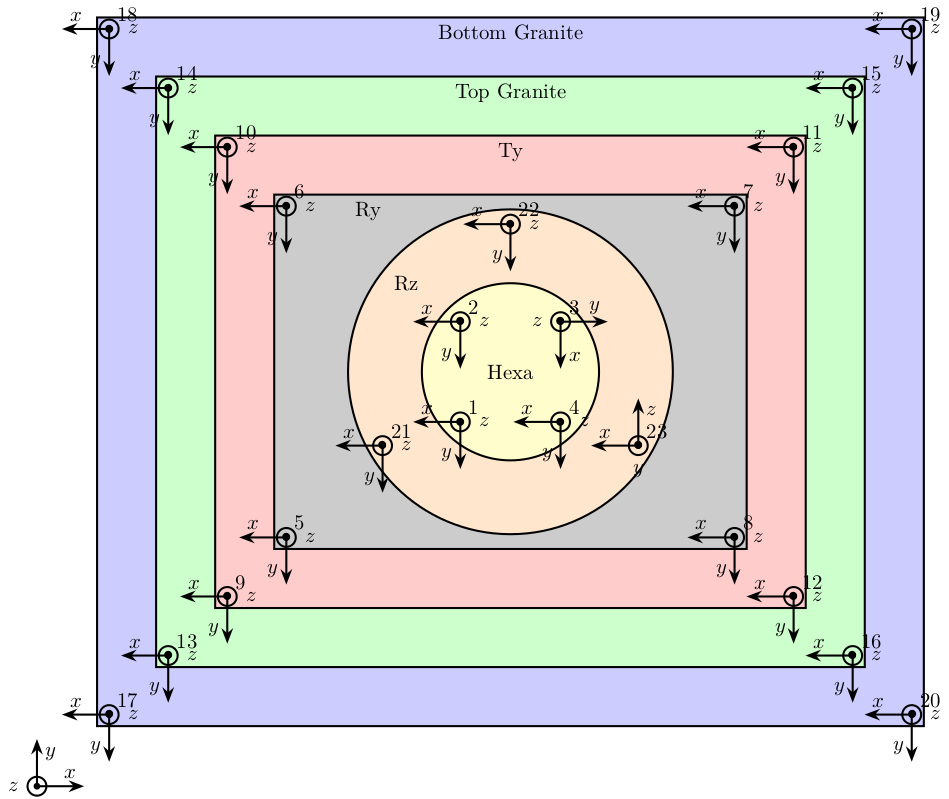